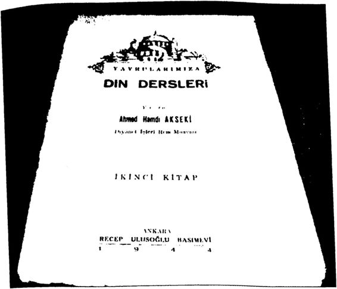
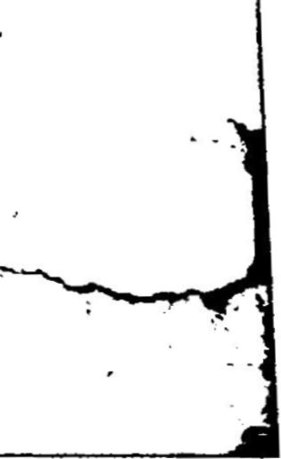
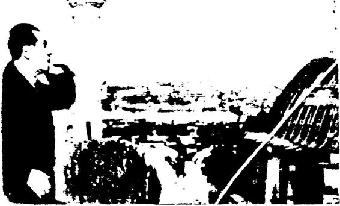
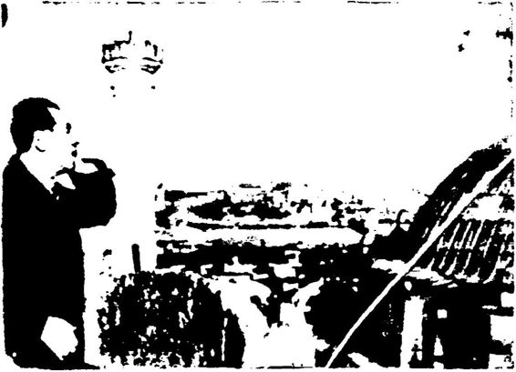
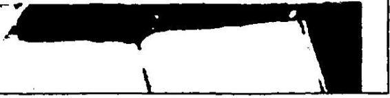
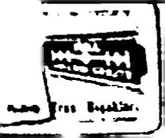
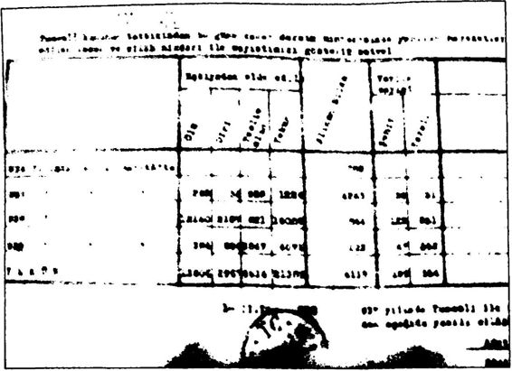

1929 Milli Eğitim Bakanlığı 1926 yılında yayımladığı bir tebliğde, “İlk okul öğretmenleri kâtiplik, vaizlik gibi bir ek görev alabilecekler ve hatta sadece sabah ve akşam namazları olmak üzere camide halka na maz kıldırab ile çekler” demiştir.y ılında din dersleri seçmeli hale getirilmiştir.y ılında ilkokulun 3, 4 ve 5. sınıflarına ve ortaokulların 1. ve sınıfına l’er saat din dersi konulmuştur. Öğretmen okullarının da 6. ve 7. sınıflarında haftada 2’şer saat din dersi okutulmuştur.y ılında ise 5. sınıflarda haftada yarım saat din dersi okutul muştur.
19311932 yıllarında ortaokullardan din dersleri kaldırılmış, ilk okullarda ise tavsiye edilmiştir. 1935 yılında köy ilkokuları hariçil kokullardan da din dersleri kaldırılmıştır.^ Atatürk, devlet eliyle doğru bir din öğretimi verilmesinden yana olmasına rağmen, “ifrat ve tefrite” kaçmadan o doğru din öğretimini verebilecek din öğretmenlerinin, uzmanların henüz yetişmemiş olma sından dolayı, din eğitimi konusunda çok cesur hareket edememiştir. Atatürk ve arkadaşları genç Cumhuriyet’in yeni nesillerine eksik, yanlış bir din eğitimi vermektense bu konuda gerekli hazırlıklar yapılıncaya kadar bir süre beklemeyi tercih etmiştir. Bu nedenle Atatürk dönemin de okullarda din dersleri olmasına karşın saat sayıları oldukça azdır.
Atatürk, Cumhuriyet çocuklarına din dersi vermeden önce ne yin din diye okutulacağına karar vererek, hurafelerden, bağnazlıktan uzak din kitapları hazırlatmak istemiştir. Bu da haliyle zaman almıştır. Nitekim aynı şekilde Cumhuriyet’in ilk yıllarında okullardan müzik dersleri bir ara tamamen kaldırılmıştır. Bunun nedeni de Cumhuriyet çocuklarına müzik dersi vermeden önce neyin ulusal müzik diye oku tulacağına karar vermek ve müzik çalışmaları yapıp müzik kitapları hazırlatmaktır.
Bu nedenle Atatürk, din eğitimi konusundaki eksikleri ailelerin tamamlamasını istemiştir.
Şöyle demiştir: “Biz dini eğitimi aileye bıraktık... Çocuk dini eği timi ailesinden alacaktır.” “Elhamdülillah hepimiz Müslümanız, hepi miz dindarız. Artık bizim dinin icabatını (gereklerini) öğrenmek için şundan bundan derse ve akıl hocalığına ihtiyacımız yoktur. Analarımı zın, babalarımızın kucaklarında verdikleri dersler bile bize dinimizin esasatım (ilkelerini) anlatmaya kâfidir.”'* Atatürk’ün ölümünden sonra, 19391946 arasında din eğitimi, Kur’an öğretimi konusunda bir bocalama devresi yaşanmıştır. Müf redattan din derslerinin kaldırılması, imamhatip okullarının öğrenci yokluğundan kapatılması gibi nedenlerle beş altı yıl içinde Türkiye’de bir din eğitimi sorunu baş göstermiştir. Bu sırada 1946’da kurulan DP, bu “din eğitimi sorunu” üzerinden oy toplamaya başlamıştır.
Din Bilgileri Dershanesi ve Din Seminerleri CHP, 1946’da din eğitimi sorununu Meclis gündemine getirmiş tir. 24 Aralık 1946 tarihli bileşimde CHP’li Muhittin Baha Pars ile Hamdullah Suphi Tanrıöver din öğretiminin yeniden başlatılmasını önermiştir. DP kurucularından Adnan Menderes ile Fuat Köprülü de bu öneriyi desteklemiştir. Fakat Başbakan Recep Peker, öneriyi “Dini propagandaya kapı açmak” diye adlandırıp karşı çıkmıştır.
Sonunda CHP, Cumhuriyet’in vicdan hürriyeti ve laiklik ilkesine zarar vermeden bir orta yol bulunarak din öğretiminin önünün açıl masını istemiştir. 1947 Temmuz ayı başlarında “Özel Din Eğitiminin Ana Hatları” adıyla bir düzenleme yapılmıştır. Buna göre her Türk va tandaşı İslam dininin esaslarını ve ibadetleri öğretmek amacıyla bakan lıktan izin alarak Din Bilgileri Dershanesi” açabilecektir. Yönergeye göre bu dershanelerin ancak ilkokulu olan yerlerde açılabileceği, öğre timin yeni Türk harfleriyle yapılacağı belirtilerek, öğretmenlerde ara nan nitelikler saptanmıştır. Bu dershanelere öğretmen veya imamhatip yetiştirmek için de “Dm Seminerleri” açılması kararlaştırılmıştır.
Milli Eğitim Bakanlığı 1 Eylül 1947’de başlayan ders yılından iti baren ortaokulu bitirenlere 5 yıl, lise ve dengi okulları bitirenlere 2 yıl olmak üzere “Özel Din Semineri” açılmasına karar vermiştir. Bakan, “Yobazlığın yeniden ortaya çıkmaması için din adamı olacak gençlerin bir din meslek okuluna girmeden önce normal bir okulu bitirmeleri,” gerektiğini ifade etmiştir.
17 Yeniden Din Öğretimi Kasım 1947’de başlayan CHP’nin 7. kurultayında en fazla la iklik, irtica ve din adamlarının durumu üzerinde durulmuştur. Ateşli tartışmalardan sonra yeniden din öğretimine başlanmasına karar ve rilmiştir. Konu 10 Şubat 1948’de CHP Meclis grubunda yeniden ele alınmış, Meclis grubu, “devlet denetiminde din eğitimi verilmesi” gö rüşünü kabul etmiştir.
Nihat Erim, İnönü’nün bu konudaki düşüncelerini şöyle gözlem lemiştir:
“İnönü, ilkokullarda ders saatleri dışında seçmeli din dersi veril mesi, Milli Eğitim Bakanlığı nın gözetimi altında imam ve hatip yetişti recek okullar açılması ve bir ilahiyat fakültesi kurulması düşüncelerini açarak girişimde bulunmanın zamanı geldiğini ileri sürdii. ‘Bu düşünce bende artık olgunlaşmış hale gelmiştir,’ dedi. ”
İnönü, kararının gerekçesini de şöyle açıklamıştır: “Laiklik ilkele ri kesinlikle zedelenmemek üzere ulusun toplumsal gerçeklerine arka mızı çevirmek doğru olmaz... Çocuklarına din eğitimi vermek isteyen ana babalar devlete şunu söyleyeceklerdir: ‘Ya bize bırakın ya da siz yapın.’ Türk olmayan azınlıklara tanınan bu en doğal vicdan hakkının gereklerini yerine getirmekten Türkleri yoksun bırakmak hangi hakka dayandırılabilir? Demokrasilerde kör bağnazlığın, kör inadın yeri yok tur. Laiklik ilkesi saklı kalmak üzere moral gereksinimlere cevap vere cek bir duruma bir an önce gelmek ülkede geniş bir ferahlık ve sempati havası estirecektir. Bunu da hükümet kaçırmamalıdır. Muhalefetin de sinsi silahım elinden düşürmüş olacağız/”
İnönü, laikliği korumak şartıyla dinsel ihtiyaçların karşılanması nın ülkede irticayı canlandırmayacağı düşüncesindedir.
İnönü’yü dinleyelim: “Kur an t Türkçeleştirmek, Türkçe Kur’an ile namaz kılmak, Latin harflerinin hazırlayacağı bir sonuç olarak ge lecektir. Şeriat bir sistemdir. Arap harfleriyle, medreseleriyle, kıyafe tiyle, hukuku ve dinsel siyasetiyle... Bu sistemin canlanmasına olanak yoktur. 25 yıllık bir zaman geçmiştir. Yeni düzende de on yıl geçtikten sonra gücünü kaybeder. ”
İnönü’nün bu öngörüsü maalesef tam olarak gerçekleşmemiştir. Bu konuşmadan on yıl sonra, 1958’de Türkiye’ye şeriat gelmemiş ama şeriat özlemleri artmıştır.
10 Kasım 1948’de CHP’li tanınmış isimlerden bir komisyon ku rulmuş ve bu komisyon “din eğitimi” konusunda şu kararları almıştır:
- İlkokullarda son iki sınıfın öğrencilerine isteğe bağlı olarak din dersi verilmesi.
- Diyanet İşleri Başkanlığı’na bağlı olarak yeniden (daha sonra Mil li Eğitim Bakanlığı’na bağlanmasına karar verilmiştir) imamhatip okulları açılması.
- Yüksek din bilginleri ve düşünürleri yetiştirmek amacıyla üniver sitede bir ilahiyat fakültesi açılması.
15 Ocak 1949’da CHP’de Haşan Saka’nın istifa etmesinin ar dından partinin başına Şemsettin Günaltay geçmiştir. Günaltay, Atatürk’ün Türk Tarih Tezi çalışmalarına katılmış, ancak Atatürk’ün ölümünden hemen sonra Atatürk döneminde okullarda okutulan tarih kitaplarının bazı bölümlerini “dinsel gerekçelerle” sansürlemiş bir İs lam tarihçisidir.
Şemsettin Günaltay hükümeti güvenoyu alırken, Günaltay “sağ lam bir demokrasi kurma” sözü vermiştir. Ancak güvenoyu alır almaz CHP’nin 10 Kasım 1948’de aldığı kararlar doğrultusunda din alanında icraatlar yapmıştır.
Bu doğrultuda:
- 15 Ocak 1949’da önce 10 aylık, sonra 2 yıllık imamhatip kurs ları açılmıştır (biri Ankara’da diğeri İstanbul’da olmak üzere 2 imam hatip kursu). Sonradan diğer şehirlerde de 8 kurs açılarak toplam kurs sayısı 10’a çıkmıştır. 1949 yılı sonuna kadar bu kurs lardan ancak 50 kişi diploma alabilmiştir. Kurslar 2 yıla çıkarıl dıktan sonra meslek okulu mezunları da kurslara kabul edilmeye başlanmıştır.
- 1 Şubat 1949 tarihinden itibaren ilkokul 4. ve 5. sınıflara program dışı ve seçmeli din dersi konulmuştur.
- 4 Haziran 1949 tarihinde çıkarılan 5424 sayılı kanunla Ankara Üniversitesi’ne bağlı bir ilahiyat fakültesi açılmıştır.
- 1 Mart 1950’de, 1925’te kapatılmış olan türbelerden “Türk bü yüklerine ait olanlarla sanat değeri taşıyanların” yeniden açılması na karar verilmiştir. 2 Nisan 1950’de Milli Eğitim Bakanlığı 20 türbenin yeniden açılmasına izin vermiştir.
Yani bir anlamda CHP, 1930’ların ortalarında kapatmak zorun da kaldığı imamhatipleri, ilahiyat fakültesini, türbeleri, müfredattan kaldırdığı din derslerini 1940’ların sonlarında yeniden hatırlamıştır. Din eğitiminin yarattığı sorunları fark eden CHP’li yetkililer, kendi ya rattıkları sorunu kendileri çözmeye çalışmıştır. Ama bu sırada devrime zarar vermek dışında bir sonuç elde edememişlerdir.
Bilal Şimşir’in ifadesiyle, “CHP’nin bu dini tavizler paketini”, bu paketin başmimarı olan Şemsettin Günaltay, başbakanlığa gelişinden altı ay sonra şöyle savunmuştur:
“İlk mekteplerde din dersleri okutturmaya başlayan bir hüküme tin başbakanıyım. Bu memlekette Miislümanlara namazlarını öğrete rek ölülerini yıkamam için imamhatip kursları açan bir hükümetin başbakanıyım. Bu memlekette, Müslümanlığın yüksek esaslarını öğ retmek için ilahiyat fakültesi açan bir hükümetin başbakanıyım ”'
DP ve Menderes’in Din Politikası CHP’nin 1948’de başlattığı “Laikliği korumak şartıyla din eğiti mine önem verme” politikasını, 1950’de iktidara gelen DP “Laikliği yok ederek Müslümana Müslüman propagandası yapma!” biçimine çevirmiştir. DP’ııin ölçüsüz ve engel tanımayan din istismarı sonunda İnönü’nün, “ Aradan 25 yıl geçti artık geri gelmez!” dediği şeriat/irtica yeniden hortlamıştır.
DP ve Menderes döneminde:
16 Haziran 1950’de ezanın yeniden Arapça okunmasına karar verilmiştir.
- 4 Kasım 1950’de ilkokul 4. ve 5. sınıflarda program dışı ve yine seçmeli olan din dersleri program içine alınmıştır. Derslere katıl mak istemeyen öğrenci, velisinden bir dilekçe getirmek zorunda dır. 13 Ağustos 1956’da yine seçmeli olarak ortaokulların 1. ve sınıflarına l’er saat din dersi konulmuştur. Din dersleri 1982 Anayasası ile zorunlu hale getirilmiştir.
13 Ekim 1951’de imamhatip kursları, imamhatip okullarına dönüştürülmüştür. Bu okullar ortaokul seviyesinde 4 yıllık okullar olarak tasarlanmıştır. Bu okullara 19741975 yılında Kur’anı Kerim ve Arapça gibi dersler eklenerek okulların süresi 7 yıla çı karılmıştır.
1951’de 1925 tarihli Tekke ve Zaviyelerin Kapatılması’na Dair 677 sayılı kanunun 1. maddesi değiştirilerek 19 türbenin açılması na izin verilmiştir.
1959 yılında Milli Eğitim Bakanlığı’na bağlı olarak İstanbul’da bir İslam İlimleri Enstitüsü açılmıştır. 19621980 arasında Türkiye’nin değişik illerinde toplam 8 Yüksek İslam Enstitüsü açılmıştır. Bu enstitüler 12 Eylül 1980 sonrasında üniversiteler bünyesinde ilahiyat fakültelerine dönüştürülmüştür.Görüldüğü gibi DP ve Menderes, Türkçe ezanı yeniden Arapça laştırmak dışında (ki onu da CHP ve DP birlikte kanunlaştırmıştır) din alanında CHP’nin uygulamalarının ötesinde dişe dokunur yasal bir adım atmış değildir. DP ve Menderes, CHP ve İnönü’nün ilkokulların son iki sınıfına koyduğu program dışı seçmeli din derslerini program içine almış ve ortaokulların iki sınıfına l’er saat din dersi koymuştur. CHP’nin imamhatip kurslarını da imamhatip okullarına dönüştür müştür. CHP döneminde Ankara Üniversitesine bağlı bir ilahiyat fa kültesi vardı. DP döneminde ise İstanbul’da bir İslam İlimleri Enstitüsü açılmıştır. Görüldüğü gibi din konusunda DP ve Menderes’in CHP ve İnönü’den fazla yaptığı tek şey, ortaokulların iki sınıfına l’er saat din dersi koymaktır.
Başbakan Erdoğan’ın, “Kur’an’ın öğretilmesinin, Hz. Peygamber’in hayatının öğretilmesinin önünü açtığında millet sevinç gözyaşları için de Mush aflar ty la hasret giderdi,” dediği Menderes döneminde “Kur’an öğtetilmesinin önünün açıldığı” doğru değildir. Kur’anı Kerim dersi 19741975 yıllarında imamhatip müfredatına eklenmiştir. Ayrıca tek parti CHP döneminde hem binlerce camide hem de 19491950’de bina sayısı 127’ye, öğrenci sayısı 10.000’e yaklaşan Kur’an kurslarında gürül gürül Kur’an okunmuştur. Yani Başbakan Erdoğan’ın “Mende res dönemine kadar Kur’an’ın yasaklandığı!” iddiası ile “Menderes’in Kur’an’a hizmet ettiği!” iddiası tam olarak gerçeği yansıtmamaktadır.
Cumhuriyet Çocuğunun Din Dersleri Erken Cumhuriyet döneminde çocukların temel din eğitimi unu tulmuş değildir. 19291935 arasında ilkokulların 3, 4 ve 5. sınıfların da, 19351939 arasında ise köy ilkokullarının yine 3, 4, ve 5. sınıfla rında din dersleri verilmiştir.
Atatürk 1929’dan itibaren ilkokullarda okutulacak din dersi ki taplarım yeniden yazdırmıştır.
1929 yılında Muallim Abdülbaki’ye (Abdülbaki Gölpınarlı) Cum huriyet Çocuğunun Din Dersleri adlı bir kitap yazdırıp bu kitabı ilko kulların üçüncü sınıflarından itibaren okutmuştur.
Atatürk’ün, Maarif Vekâleti Talim ve Terbiye Dairesi’nin 88 nu maralı kararıyla ilkokullarda ve köy okullarında okuttuğu Cumhuriyet Çocuğunun Din Dersleri adlı kitapta yazılanlardan bazıları şunlardır: “Bugünkü Türklerin dini: İslam dini, İslam imanı, imanın düstu ru: 'La İlahe İlallah, Muhammed’un Resulullah. ”
“İslam dinini insanlara öğreten zat: Hazreti Peygamber. ”
“ALLAH'A İMAN: Allah müminlerin kalplerinde yaşayan ulvi bir varlıktır. Allah hiiyük bir yaratıcı kudrettir. Allah sevgisi, bü tün ibadetlerin başı ve en büyüğüdür. Allah’ı bize tanıtan Hazreti Peygamberdir.Allah zaman ve mekânın üstündedir. ”
“CAMI: Müslümanların Allah'a ibadet için toplandıkları yerlere cami denir. Cami, okul gibi hepimizin, bütün milletin malıdır. İçindeki eşya da öyledir. Allah’a evlerimizde de ibadet edebiliriz. Fakat Allah camideki ibadeti daha çok sever. Çünkü onun faydası daha çoktur. Oradaki büyüklerden din işlerini öğreniriz. Birbirimizi tanırız, severiz. Birbirimizin halini anlarız. Birbirimize faydamız dokunur. Zaten Müs lümanlık ayrılık dini değil, topluluk dinidir.”
“İMAN: Müslümanlık Allah’a ve Müslümanlığı öğreten Peygam berimize inanmaktır. Allah’a ve Peygamber’e inanmaya ‘iman’ deriz. Allah, bu kâinatı, bizi yaratan kudret sahibidir. O’nun ne olduğunu, nasıl olduğunu biz tamamıyla bilemeyiz, O çok büyüktür.”
“Şu iki söz İslam imanını bildirir: ‘La ilahe illallah Muhammedün Resıılullah’ Tiirkçesi Allah birdir, ondan başka Allah yoktur. Muham med de Allah’ın Peygamberidir,’ demektir. İşte bu sözlerin anlamına inanan kimse Müsliimandır. Görüyorsunuz ya çocuklar: Müslüman lık en kolay en doğru bir dindir. Müslümanın kutsal kitabı ‘Kur’anı Kerim’dir. Allah’ın emirleri bu kitapta yazılıdır. Biz Kur’anı Kerim’e çok hürmet ederiz. Bütün ahlak güzelliklerini bize öğreten bu kutsal kitaptır. ”
HZ. MUHAMMED: İslam dinini insanlara öğreten Hazreti Mu hammed Arabistan’da Mekke şehrinde doğdu. (...) O vakitlerde Arap lar hiç medeniyet bilmezlerdi; cahil; vahşi bir haldeydiler. Taşlara, put lara taparlar, kızlarını diri diri toprağa gömerlerdi.
Açık fikirli Muhammed bu hallerden çok sıkılır, milletini doğru yola götürmeyi kendi kendine düşünürdü. Artık tamamıyla büyümüş olan genç Muhammed’i milleti çok severdi. O hiç yalan söylemezdi. Düşünceleri daima doğruydu. ”
“Peygamberimiz İslam dinini insanlara anlatmaya, ‘Bu taş parça larına, putlara tapınmayın, bunlardan insana ne iyilik gelir ne fenalık. Allah birdir ve büyüktür,’ demeye başladı. O vakit kendisi kırk yaşına gelmişti. ”
“Yüzü gayet güzel, kendisi sevimli olan Peygamberimizin ahlakı da gayet güzeldi. Hiç kimseye fena muamele etmez; fakirlere, dul ka dınlara yetim çocuklara daima yardım eder, herkese doğru yolu göste rir, nasihat verirdi. ”
“ALLAH’A İMAN: Büyük Peygamberimiz bize Müslümanlığı öğ retmiş, Allah’ın istediklerini anlatmıştır. Allah yerleri, gökleri, bizi ve her şeyi yaratan büyük kudret ve kuvvettir. Her şeydeki, herkesteki kuvvet ve kudret O’nun kuvveti, O’nun kudretidir. O her yerdedir, fakat hiçbir şey Allah değildir. Gördüğünüz her şeyde O’nun sanatı, kudreti vardır. ”
“İslam dini aklı her şeyden üstün tutmuştur. Hatta Peygamberi miz, ‘Din akıldır, aklı olmayanın dini de yoktur,’ demiştir.
“Kutsal kitabımız olan Kur’an, Peygamber in kalbine doğmuş Al lah sözleridir.
“Allah gökyüzünde değildir ve göklerde öyle kat kat altınlı mü cevherli saraylar yoktur. Bize fennin dediği her şey doğrudur, fenne, akla uymayan şeyler, dinde yeri olmayan yalanlardır. ”
“Allah’a ulaşmak, ona halimizi anlatmak için evliyalara muhtaç değiliz. Peygamberimiz bize Allah’ı böyle anlatmıştır.”
“Çocuklar biliyorsunuz ki, Hazreti Muhammed Mekke’liydi, ana dili de Arapçaydı. fakat kurduğu din, İslam dini yalnız Araplara değil bütün insanlara aittir. İslam dininde olanlar, Miislümanlar da yalnız Araplardan ibaret değildir. Biz Türk olduğumuz, anadilimiz Türkçe olduğu halde Müslümanız. Müslümanlık bütün insanlara ait bir din olduğundan, bu dine mahsus tek bir dil olmaz.
Her millet Allah’a kendi dili ile hitap eder. İstediklerini kendi di liyle ister, kendi diliyle şükreder. Allah’a karşı samimi olmak, bütün duygularımızı, isteklerimizi, duyduğumuz, istediğimiz gibi söylemek için mutlaka Türkçe söylememiz, kendi anadilimizle hitap etmemiz la zımdır. ”
Atatürk’ün ilkokullar için hazırlattığı Cumhuriyet Çocuğunun Din Dersleri adlı kitap gerçekten de İslam dinini en iyi, en sade, en anlaşılır şekilde özetleyen nadir kitaplardan biridir.
İddia ediyorum, geçmişten günümüze okullarımızda okutu lan hiçbir Din Kültürü ve Ahlak Bilgisi kitabı, Atatürk’ün Muallim Abdülbaki’ye hazırlattığı bu kitaptan daha iyi değildir. Muallim Abdülbaki, “Cumhuriyet Çocuğu’nun Din Dersleri”, İstanbul, 19301931
Kitapta İslam dininin bütün kavram ve kurumlan, Cumhuriyet’in İslam anlayışı en açık, en sade ve en samimi bir üslupla, çocukların an layacağı dille anlatılmıştır. Kitabın en ilginç özelliklerinden biri, kita bın sonundaki Kur’anı Kerim’deki Sözlerden” adlı kısa bölümüdür. Bu bölümde Fatiha suresi ile Ihlas suresinin önce yeni Türk harfleriyle Arapça aslı, sonra ise Türkçe anlamına yer verilmiştir.
Kitapta Allah, Peygamber, İslam dininin temel özellikleri en sade ve anlaşılır biçimde açıklanmıştır. Bu kitap, Başbakan Erdoğan’ın, “Tek Parti döneminde Hz. Muhammed’in hayatının öğretilmesi ya saklandı!” iddiasını da çürütmektedir. Çünkü kitapta en fazla İslam peygamberi Hz. Muhammed’den söz edilmiştir. Kitapta, “Hz. Mw bammed”, “Muhammed'in peygamberliği”, “Peygamber’iti Son Haccı ve Öliimii”, “Peygamber’in Ahlakı”, “Hz. Mubammed Aleyhisselam” başlıkları altında Hz. ıMuhammed en mükemmel şekilde Cumhuriyet çocuklarına anlatılmıştır.
Bu kitapla birlikte Tek Parti döneminde 19311941 yılları arasın da ortaokullarda ve liselerde okutulan dört ciltlik “Tarih” serisinin, Tarih llOrta Zamanlar adlı ikinci cildinde de Hz. Muhammed’den çok uzunca ve övgüyle söz edilmiştir. Dahası Hz. Muhammed’den söz edilen bazı bölümleri bizzat Atatürk yazmıştır. İlkokullara yönelik olarak hazırlanan “din kitabında” Hz. Muhammed’den daha çok vah ye, dine dayalı olarak söz edilirken, ortaokul ve liseler için hazırlanan “tarih kitabında” Hz. Muhammed’den daha çok akla, bilime dayalı olarak söz edilmiştir.
Atatürk’ün en çok sevdiği, en çok etkilendiği tarihi kişiliklerin başında Hz. Muhammed gelmektedir. Tek Parti döneminde, özellikle Atatürk’ün hayatta olduğu dönemde, Hz. Muhammed’den övgüyle söz etmenin yasaklandığını söylemek gerçekdışıdır.
Atatürk’ün, genç Cumhuriyet’in çocuklarına ve gençlerine İslam dinini en iyi şekilde öğretmek için hazırlattığı Cumhuriyet Çocuğu nun Din Dersleri adlı kitap iç ve dış Cumhuriyet düşmanlarını, din bezirgânlarını çok rahatsız etmiştir. Nitekim 1948 yılında Cumhuriyet Çocuğunun Din Dersleri kitabı kaldırılıp yerine Müslüman Çocuğu nun Kitabı adıyla yeni bir ders kitabı yayımlanmıştır.
Ancak bu kitap, Muallim Abdiilbaki’nin kitabının aksine İslam dininin özünü değil, İslam dinine sonradan giren mezhepleri, tarikat lan, hurafeleri İslam dini olarak anlatan bir kitaptır. Öyle ki, dönemin İslamcı yayın organı Sebilürreşad dergisi bile bu kitabı “tarikatçılıkla” suçlamıştır.
“Devletin din meselesine acele müdahalesi. Eserin bir ucu tekke lere, öbiir ucu modern maneviyata dayanıyor. Altı kaval üstü şişha ne. Değersiz, zevksiz mistik manzumeler. Tarikatçılık, hurafeperest lik. Siyasi acelecilikle bakanlığın bu eseri kendine mal etmesi yerinde değildir.”
Demem o ki, R. Tayyip Erdoğan’ın iddia ettiği gibi Tek Parti dö neminde Kur’an öğretmek, Kur’an öğrenmek, Kur’an okumak ve Hz. Muhammed’in hayatının anlatılması yasaklanmamıştır. Tam tersine Tek Parti döneminde ilkokul çocuklarına bile Allah’ı, Peygamber’!, Kur’anı Kerim’i, en doğru, en sade ve en anlaşılır şekilde öğretmek için dönemin din âlimlerine kitaplar yazdırılmış, bu kitaplar okullarda okutulmuştur.
Yavrularımıza Din Dersleri Atatürk’ten sonra İnönü döneminde de çocuklarımız için din dersi kitapları yazılmış, yayımlanmıştır. Örneğin Diyanet İşleri Başkanı Yar dımcısı Ahmet Hamdi Akseki, 2 kitaptan oluşan Yavrularımıza Din Dersleri adlı kitaplar yazmıştır. Bu kitaplar, 1944’te, İnönü dönemin de, Ankara’da Recep Ulusoğlu Basımevi’nde basılmıştır.
Bu kitaplarda da çok anlaşılır bir dille, çok sade bir şekilde, İslam dininin özü “yavrularımıza” anlatılmıştır. Allah ve Peygamber, İslam dininin kutsal kitabı Kur’an, İslam ahlakı vb. dini konularda çocukla rımızın bilgilendirilmesi amaçlanmıştır.
Görüldüğü gibi bazı kesimlerce “din düşmanlığı yapıldı” diye suç lanan İnönü döneminde de çocuklarımızın din eğitimi düşünülmüştür. Diyanet İşleri Başkan Yardımcısı Ahmet Hamdi Akseki’nin Yavruları mıza Din Dersleri adlı iki ciltlik kitabı, Tek Parti döneminde basılan din dersi kitaplarından biridir.
 Ahmet Hamdi Akseki, “Yavrularımıza Din Dersleri”, Recep Ulusoğlu Basımevi, Ankara, 1944
Askere Din Kitabı Atatürk ve İnönü, sadece çocukların değil ordunun din eğitimini de unutmamıştır. Ahmet Hamdi Akseki’nin, Cumhuriyet’in ilk yıllarında kaleme aldığı kitaplardan biri de Askere Din Kitabı adlı eserdir. İlk bas kısı, Atatürk döneminde, 1925’te yapılan kitap, ikinci baskısını İnönü döneminde, 1945 ve 1946 yıllarında yapmıştır. Diyanet İşleri Başkanlığı Yayınlarından çıkan kitap, askeri okullarda okutulmuştur.
Kitabın yayımlanmasını bizzat dönemin Genelkurmay Başkanı Fevzi Çakmak istemiştir. Bu gerçek, kitabın “Öwsöz”üne şöyle ifade edilmiştir:
“1341/1925 yılında Genel Kurmay Başkanlığından Diyanet İşleri Başkanlığına aşağıdaki yazı geldi: No: 4003 ‘Diyanet İşleri Başkanlığına.
Ordunun maneviyat dersleri içinde en önemlisi dinle ilgili olan öğretimdir. Askere din bilgisi vermek üzere yazılmış pek çok kitap varsa da, bunlar ya çok geniş olarak ya da ferdlerin anlayamayacağı bir uslüb ile yazılmışlar dır. Bu sebeple sade ve öz olarak yazılmış bir din bilgisi kitabına ihtiyaç vardır. Ordunun bu ihtiyacının özlü bir kitap hazırlanarak karşılanmasını bilhassa istirham ederim. Bundan başka, memleketimizde çalışmanın ne kadar geri kalmış olduğu bilinmektedir. Orduya gelen gençleri din eği timi ile çalışmaya teşvik için, bu konudaki ayeti kerime ve hadîsi şerif lerle bunların Türkçe tercümelerinin levhalar halinde askerî dershanelere asılması çok uygun olacaktır. Bunu gerçekleştirmek için o gibi âyet ve hadislerin çıkartılarak gönderilmesine yardımlarınızı ayrıca istirham ede rim efendim.' 26/3/1341 Genelkurmay Başkam Mareşal FEVZΔ.
ASKERE Yaıan:
AHMET HAMDI AKSEKİ 6İYANET İŞLERİ BAŞKAN MUAVİNİ İJCİNCİ BASIM FRt'ZZtYA MATBAASI İSTANBUL Ahmet Hamdi Akseki, “Askere Din Kitabı”, Ebüzziya Matbaası, İstanbul, 1945
Atatürk’ün cumhurbaşkanı, İnönü’nün başbakan olduğu Türkiye Cunıhııriyeti’nin Genelkurmay Başkanı Fevzi Çakmak’ın isteği üzeri ne “askerler için dini levhalar ve bir din kitabı yazma görevi” Ahmet Hamdı Akseki’ye verilmiştir. Akseki, kitabının 1945 yılındaki 2. bas kısında bu gerçeği şöyle ifade etmiştir:
“Bunun üzerine istenilen levhaların ve muhtasar bir ilmihalin hazırlanması hana havale olundu. Ayet ve hadislerle tercümeleri bi rer levha şeklinde hazırlanarak gönderildi. Askere Din Dersleri adıyla yazdığım eser de kabul edilerek basıldı ve Erkanı Harbiye Umumiye Riyaseti (Genelkurmay Başkanlığı) tarafından orduya dağıtıldı.
477 Ordunun maneviyatı üzerinde pek iyi bir tesir yaptığı görülen ve 45 senedir daha çok sorulan bu eserin Türk harfleriyle tekrar bastırıl ması arzu edildiğinden eseri yeni baştan gözden geçirdim ve daha sa deleştirdim. Askerin yurt sevgisi, vazife aşkı, kahramanlık menkıbeleri hakkında yeni yeni bahisler koydum...”s ayfalık Askere Din Kitabı'nda (1945’teki 2. baskısı) farklı konularda toplam 66 ders vardır. Bu derslerden ilk 10’u şöyledir:
- “1. DERS: Askerin Duygusu 1. Vatan sevgisi imandan gelir 2. Ana öğüdü 3. Baba öğüdü, Okuma Parçası: Türk Vatanı, Vatan Duası; 2. DERS: İslam Dini 1. İslam dini ne demektir? 2. Gerçek din İslam dini dir. I. BÖLÜM İSLAM DİNİNDE İNANÇ; 3. DERS: İslam Dininde İman Esasları 1. İman ne demektir? 2. İmanın mertebeleri; 4. DERS: Allah’a İman 1. Allah’a nasıl iman edilir? 2. Her şeyi yaratan Allah’tır Allah’ın sıfatları a. Allah her şeyi bilicidir b. Allah irade sahihidir c. Allah kudret sahibidir d. Allah işitici, görücü ve söyleyicidir e. Allah birdir f. Allah diri (hay) dir, ezelî ve ebedîdir. Okuma Parçası: Âyetler; 5. DERS: Allah Sevgisi, Allah Korkusu 1. Allah’tan korkmayandan korkulur 2. Her iyiliğin başı Allah korkusudur. Okuma Parçası: Ayet ve hadîsler; 6. DERS: Meleklere iman 1. Melek nasıl bir varlıktır? 2. Meleklerin sıfatları 3. Dikkat edilmesi gereken hususlar; 7. DERS: Ki taplara iman 1. Kitap ne demektir? 2. Kitapların sıfatları; S. DERS: Kur’anı Kerim 1. Kur’an nasıl bir kitaptır? 2. Kur'anı Kerim'in sıfatı. Okuma Parçası: Âyetler; 9. DERS: Peygamberlere iman l. Kimlere peygamber denir? 2. Peygamberlerin sıfatları; 10. DERS: Hazreti Mu hammed (s.a.s.) 1. Peygamberimiz kimdir? 2. Peygamberimizin hayatı Peygamberliğin gelişi. Okuma Parçası: Peygamberimizin Bazı Du aları...”
Kitap, M. Âkif Ersoy’un Ordunun Duası adlı bir şiiriyle sona er mektedir.
Kitabın, “laiklik'' ağırlıklı devrimlerin yoğunlaştığı 1925’te bastı rılmış olması dikkat çekicidir. O sırada Halifeliğin Kaldırılması, Tekke ve Zaviyelerin Kapatılması, Şapka Kanunu gibi devrimleri gerçekleş tiren genç Cumhuriyet, belli ki aynı zamanda akla ve bilime uygun, hurafelerden ve bağnazlıktan uzak bir din anlayışının gelişmesi için çaba harcamıştır. Bu devrimler yüzünden kimi çevrelerce “dinsizlikle” suçlanan genç Cumhuriyet ordusuna bile din dersleri vermiştir.
Atatürk ve İnönü dönemlerinde (tek parti CHP döneminde), Türk ordusuna, İslam dininin güzellikleri, Allah’ın yüceliği, Peygamberin yüksek ahlakı, Kur’anı Kerim’in özellikleri, güzellikleri gibi konularda “hurafelerden uzak” çok sade ve öz biçimde hazırlanmış Askere Din Kitabı okutulmuştur.
Askeri Din Dersleri Genç Cumhuriyet’in yine Türk ordusuna yönelik olarak hazır latmış olduğu kitaplardan biri de Muallim Cevdet imzalı Askeri Din Dersleri adlı kitaptır.
İlk baskısı 1928 yılında yapılan 239 sayfalık bu kitabın kapağında Osmanlıca aynen şöyle yazmaktadır: “Erkanı Harbiye Umumiye Ri yaset Celilesi’nce açılan müsabakada birinciliği kazanan bu eser, ayrıca mükâfatla taltif ve bütün ordulara resmen kabul olunmuştur.”
Kitabın kapağında belirtildiğine göre bu kitap Maarif Vekâleti Talim Terbiye Dairesi’nce de şu raporla “takdir” edilmiştir:
“Bu kitap gerek aile terbiyesiyle, gerek askerlerin maneviyatını yükseltmekle meşgul herkesi alakadar eder. Muallimlik edecek gençler köylülere (insanlık, yurt, din) terbiyesinin nasıl verileceğini bu eserde ameli (uygulamalı) numunelerle birebir görürler. ”
 Muallim Cevdet, “Askeri Din Dersleri”, Yeni Matbaa, İstanbul, 1928
Yine kitabın kapağında kitaptaki derslerin İslamiyetin 10 ilkesi etrafında toplandığı belirtilerek o ilkeler şöyle sıralanmıştır:
“1. Allah ve Peygamber sevgisi Sıhhat ve temizlik sevgisi İlim ve sanat sevgisi Aile ve ev sevgisi Askerlik sevgisi Adalet sevgisi Halk sevgisi: Yetimleri, fakir kızları korumak S. Şehir hayratı sevgisi: Çeşmeler, imarethaneler, hastaneler, mektepler, kütüphaneler açtırmak Güzel şeyler sevgisi: Güzel ezanlar, güzel sesler, güzel binalar, güzel çiçekler, güzel ağaçlar, güzel kitaplar, güzel nakışlar Her fena ve fücur şeylerden nefret: Fuhuş, kumar, içki...” Görüldüğü gibi kitap, İslam dinini sadece “ahreti” ilgilendiren bir ölüm ötesi konu olarak ele almamış, İslam dininin aynı zamanda “dün yevi” bir din olduğu gerçeğinden hareket etmiştir. Kitap, bağnazlıktan, hurafeden uzak, akla ve bilime uygun şekilde kültürü, sanatı, sağlığı geliştirmeyi, toplumsal ilişkileri güçlendirmeyi amaçlayan; vatan sevgi sini, doğa sevgisini ve insan sevgisini esas alan bir anlayışla yazılmıştır. 1928’de basılan Askeri Din Dersleri adlı kitap, tıpkı 1929’da basılan Cumhuriyet Çocuğunun Din Dersleri adlı kitap gibi İslam dininin bağ nazlıktan uzak, en güzel şekilde nasıl anlatılabileceğini gösteren nadir örneklerden biridir.
Kitap 40 dersten oluşmaktadır. Söz konusu 40 dersin ilk 10’u şun lardır:
- Cami ve ezan Cami terbiyesi ve peygamberimiz Eski Müslümanlık ve Avrupa’da temizlik Peygamberimizin yemin usulü Neferler ve diş temizliği Frengi ne yapar?
- Askerler ve içki Lailaheillallah Hz. Muhammed kimdir?
- Peygamberimiz halkı nasıl terbiye etmiştir?
Görüldüğü gibi genç Cumhuriyet’in Genelkurmay Başkanlığı, as kerine en iyi şekilde din eğitimi verebilmek için bir yarışma açmış, o yarışma sonunda birinci olan Muallim Cevdet’in Askeri Din Dersleri adlı kitabını tüm orduya zorunlu tutmuş, dahası Cumhuriyet’in Milli Eğitim Bakanlığı da bu kitabı köy okullarındaki öğretmenlere ve her kese önermiştir. Üstelik söz konusu kitap “laiklik” ağılıklı devrimlerin hayata geçmeye başladığı 1928’de basılmıştır. Bilindiği gibi aynı yıl anayasadan “Devletin dini İslam’dır” maddesi çıkarılmıştır. Bu de mektir ki, genç Cumhuriyet’in anladığı laiklik, bir taraftan “devletin dini olmayacağını” savunan, diğer taraftan büyük bir bölümü Müslü man olan Türkiye’de İslam’ın en doğru, en sade şekilde anlaşılmasını sağlamak için çaba harcayan bir özelliğe sahiptir.
Genç Cumhuriyet’in laiklik anlayışının asla “dinsizlik” olmadı ğının en açık kanıtı öğrencilere din eğitimi vermek için hazırlatılan Cumhuriyet Çocuğunun Din Dersleri ve Yavrularımıza Din Dersleri ile askerlere din eğitimi vermek için hazırlatılan Askere Din Kitabı ve Askeri Din Dersleri adlı kitaplardır.
352.000 Takım Dini Kitap Sonuçta genç Cumhuriyet 19231950 yılları arasında 352.000 ta kım dini kitap bastırmış ve bunları Atatürk ve İnönü dönemlerinde köylere kadar ücretsiz olarak dağıtmıştır.
- Elmalık Hamdi Yazır’ın Hak Dini Kur’an Dili adlı Kur’anı Kerim Tercüme ve Tefsiri (9’ar cilt): 45.000 adet.
- Ahmet Naim EfendiKâmil Miras Hoca’nın Buhari Tercüme ve Şerhi (İzahı) (12’şer cilt): 60.000 adet.
Genel Din Kültürü Eserleri: 247.000 adet.Cumhuriyet’in ilk 15 yılında Elmalık Hamdi Yazır’m 9 ciltlik dev eseri başta olmak üzere Kur’an’ın tefsir ve tercümesiyle ilgili toplam 9 eser yazılıp yayımlanmıştır.
Bu rakamların ne anlama geldiğini daha iyi anlamak için basit bir kar şılaştırma yapalım: Dini nitelikli bir imparatorluk olan Osmanlı’da 1400 ile 1730 yılları arasında, yani tam 330 yıllık dönemde telif olarak 14 tefsir, 48 fıkıh, 25 akid ve kelam, 11 ahlak ve sadece 1 tane de hadisle ilgili ol mak üzere dini içerikli toplam 99 eser yazılmıştır. Ayrıca “Fünûnı Âliye” ibaresinden dini nitelikli oldukları bilinen 30 çalışma yapılmıştır. Kısacası 330 yılda yazılan toplam 234 telif eserden 143’ü dini niteliklidir. Ayrıca matbaanın olmadığı bir dönemde bu eserlerin çok fazla sayıda çoğalnlıp çok rahat bir şekilde halka ulaştırıldığı ve okumayazma oranı çok düşük olan halkın bu eserleri okuyup anladığı da söylenemez hani.
Ezanın Türkçeleştirilmesi Başbakan R. Tayyip Erdoğan birçok konuşmasında CHP’yi ve İnönü'yü ezanı Türkçeye çevirdiği için çok ağır bir şekilde eleştirmiştir: 1940'lı yıllar boyunca milletin değerlerine, milletin kutsal larına karşı aleni bir savaş yürütüldü. (...) Ezan aslına mugayir bir şekle çevrildi. (...) Evet... O Menderes ezam aslına döndürdüğünde Anadolu'nun her köşesinde insanlar hüngür hüngür ağladılar (...) ”, “Bunların dünlerinde Türkçe ezan var", Bu İnönü CHP’si. Onlar da Türkçe ezan okudular. Menderes geldi ezan aslına döndü”, “Bu millet, merhum Adnan Menderes ve arkadaşlarının ezanın Türkçe okunma sına son vermelerini asla unutmadı, unutmuyor. Ben inanıyorum ki bu millet, her şey unutulsa hile, sırf ezana iade ettiği hürmetten dolayı Adnan Menderes'i gönlünde ve hafızasında taşıyacaktır. ”
“Ezanın nasıl susturulduğunu (...) milletimiz çok iyi hatırlıyor.” “Bugün 16 Haziran. Çok anlamlı bir yıldönümünü idrak ediyoruz. Bundan 63 yıl önce bir 16 Haziran günü Merhum Adnan Mende res başbakanlığındaki Demokrat Parti hükümeti çok büyük, çok ağır bir zulmü ortadan kaldırmıştır. Türkiye’nin güzelim minarelerinden ezan iç karartıcı şekilde ‘Tanrı uludur’ diye okunuyordu. Kim yaptı bunu; CHP. İşte 16 Haziranda yeniden minarelerden Allahu ekber diye ezan okunmaya başladı...”
Başbakan Erdoğan bazı konuşmalarında, ezanı 1940’lı yıllar da İnönü CHP’sinin Türkçeye çevirdiğini iddia ediyor. Ancak bilin diği gibi Türkçe ezan 1932 yılında Atatürk’ün sağlığında ve özellikle Atatürk’ün isteğiyle okunmaya başlamıştır.
Başbakan Erdoğan, zaman zaman da CHP döneminde ezanın sus turulduğunu iddia ediyor. Ancak bilindiği gibi 19321950 arasında CHP döneminde ezan Türkçe okunmuştur, ama okunmuştur; ezanla rın susturulduğu doğru değildir.
Başbakan Erdoğan, CHP döneminde ezanların Türkçe okutulma sını “çok büyük ve ağır bir zulüm”, “iç karartıcı şekil” olarak adlan dırıyor. Ancak ezan namaza çağrıdır. Türkiye’de yaşayıp Türkçe ko nuşan Türk Müslümanların namaza Türkçe çağrılmaları çok doğaldır. Burada “zülüm” değil “samimiyet” vardır. “Tanrı uludur” diye Türk çe okunan ezanın “iç karartıcı” olduğunu söylemek için de iyi Türkçe bilmemek veya Tiirkçeyi sevmemek gerekir.
Başbakan Erdoğan, ezam Adnan Menderes başbakanlığında ki DP’nin yeniden Arapça okutmaya başlattığını iddia ediyor. Evet! Ezanın 1950’de Adnan Menderes’in başbakanlığındaki DP hükümeti döneminde Arapçaya çevrildiği doğrudur, ama eksiktir! Çünkü o ya sayı DP ve CHP birlikte kabul etmiştir. Yani ezanın yeniden Arapça ya çevrilmesi konusunda illa da birilerine teşekkür etmek gerekiyorsa Menderes’le birlikte İnönü’ye de teşekkür etmek gerekir.
Türkçe Ezan Dine Uygundur Atatürk, 1933 yılında “Ezan ve Kur’an’ı Türklerden başka hiçbir Müslüman millet bu kadar güzel okuyamaz. Bunlara muhteşem müzik ahengi veren Türk sanatkârlarıdır,” demiştir.
Her şeyden önce ezan ibadet değil, ibadete çağrıdır. Hz. Muham med ilk ezanı gür sesiyle bilinen Habeşli Bilal’a okutmuştur. O zaman Araplara yapılan bu çağrı doğal olarak Arapça yapılmış ve ondan son ra da Arapça olarak yaygınlaşıp öylece kalmıştır. Prof. Yaşar Nuri Öz türk Anadilde İbadet Meselesi adlı kitabında bu gerçeği şöyle dile getir miştir: “Ezan bir paroladır, namaz vaktinin geldiğini ve yakınlarda bir cami olduğunu duyurur. Yani ezan bir ibadet değil bir duyurudur.”
Ancak ülkemizde öteden beri din bezirganları Kur’an’ın Türkçe leştirilmesine karşı çıktıkları gibi ezanın Türkçeleştirilmesine de karşı çıkmışlardır. Falih Rıfkı Atay 1960’larda şöyle diyor: “Geçenlerde Di yanet İşleri Reisi’nin bir demecini okudum. ‘Ezan ibadettir, o da ancak Arapça okunabilir’ diye! 1879’da, yani bundan 87 yıl önce İstanbul ca milerinde ders veren din bilgini Hoca Suavi: ‘Kur’an’ın her millet dilin de okunabileceği hakkında İmamı Azam fetvasını unutarak hutbeleri bile Arapça okutuyoruz,’ diyordu”. “ Yıllarca önce Türkiye'ye gelen Filistin Müftüsü (...) ezanın Arapça mı Türkçe mi okunacağı sorusuna, ‘Siz birbirinizi hangi dilde çağırırsınız?’ demişti.”
Ezan, İslam dininin en önemli sembollerinden biridir. Allah, kur'an’da, her şeyden önce Kur’an’ın anlaşılmasına vurgu yapmıştır. İmamı Azam Ebu Hanife başta olmak üzere büyük miitefessirler de Kur’an'm başka dillere çevrilebileceğini, bu başka dillere çevrilmiş kur'an'la namaz kılınabileceğini ve dolayısıyla ezanın da başka dillere çevrilebileceğini belirtmişlerdir. Prof. Yaşar Nuri Öztürk’ün ifadesiyle, “Ebu Hanife re Hanefi mezhebi namaz vaktini duyurma amacı sağ lanması şartıyla bınıa da (Türkçe ezana) da cevaz vermiştir.”'* Hane fi mezhebine göre ezan başka dillere çevrilebilir. Kasani, “Bedai’u's Sanai” de bu konuda şöyle demiştir: “Ezanı Farsça çeviriden okusa ne olur?’ (...) Eğer duyuru gerçekleşiyorsa ezanın tercümesini okumakta da bir sakınca yoktur.”' Bu nedenle ezanın başka dillere çevrilmesi nin önünde hiçbir “dinsel engel” yoktur. Kur’an’da, ezanın başka dil lere çevrilemeyeceği hakkında hiçbir hüküm yoktur. Bu konuda sadece geleneksele aykırılıktan söz edilebilir.
Özetle ezanın Türkçeleştirilmesi hiçbir şekilde “dine aykırı” de ğildir. Ezanın Türkçeleştirilmesi, namaza çağrının Arapça değil de Türkçe yapılmasıdır. Müslüman Türklerin namaza Türkçe çağrılma larından daha doğal bir şey de yoktur. Burada yanıtlanması gereken soru, insanları bilmedikleri bir dille mi yoksa anadilleriyle mi namaza, ibadete çağırmak daha etkili, daha iyi sonuç verir sorusudur. Hiç kuş kusuz anadilde yapılan çağrı daha etkilidir, çünkü bu çağrı dinleyen tarafından her harfine, her zerresine kadar hissedilir, ancak başka dil de yapılan bir çağrı “alışkanlığın yarattığı şartlı refleks dışında” derin bir etki uyandırmaz. Şöyle de ifade edebilirim: Arapça ezan okundu ğunda dinsel kültür ve alışkanlıklar etkisiyle buna saygı duyan ancak anlamını bilmediği veya bilse bile hissedemediği için ibadete/namaza gitmek konusunda içinde vicdani bir baskı/dürtü duymayan bir Müslü man Türk, anadilinde yani Türkçe okunan ezanı duyunca ne dendiğini tam olarak anladığı ve o anlamı hissettiği için, ibadete/namaza gitmek konusunda içinde vicdani bir baskı/dürtü, hatta belki haz duyacaktır. Kısaca Türkçe ezan anlamı bilinse bile anadilde olmadığı için hisse dilemeyenArapça ezanın ruhlarda, imanlarda yaratamadığı coşkuyu yaratacaktır. Bu nedenle anadilde ezan aslında dinin belki şekline, ge leneğine değil ama ruhuna çok daha uygundur. Tabii şekilcilerin bunu anlaması olanaksızdır!
Kur’an’ın ve Hz. Muhammed’in bu konuda herhangi bir yasa ğı olmadığına göre, dahası İmamı Azam Ebu Hanife ve Hanefi fık hı da buna onay verdiğine göre ezanı anadilde, yani Türkçe okutan Atatürk’ü, İnönü’yü, CHP’yi “dinsizlik” yapmış gibi suçlamak her şey den önce İslam dininin ruhuna aykırı bir davranıştır.
Evet! Ezan İslam dininin bir anlamda “evrensel sembolü” olduğu için anadile çevrilmeden orijinal dilinde de okunabilirdi. Atatürk de bu gerçeğin farkındaydı, ancak o, “Türkün Milli Dini İslam” tezi çerçeve sinde İslam’ı her şeyiyle Türkçeleştirmek istemiştir. Kur’an’ı, hutbeyi, tekbiri Türkçeleştirip de ezam Türkçeleştirmemeyi dinde Türkçeleştir me çalışmalarının yarım kalması olarak görmüştür.
Ayrıca asla unutulmamalıdır ki, Atatürk bu ülkede ezanların sus maması için bir ölüm kalım savaşı vermiştir. Şu bir gerçek ki o, önce ezanların susmasını engellemiş, sonra da o ezanların anlaşılmasını sağ lamıştır. Atatürk’ü ezanın susmasını engelleyip, anlaşılmasını sağladığı için “dinsizlikle” suçlamak anlamsızdır. Aklı başında bir Müslüman Türkün yapması gereken, ezan konusunda Atatürk’e ve Cumhuriyet’e teşekkür etmektir.
Osmanlı’da Türkçe Ezan Türk tarihinde ilk kez Osmanlı döneminde 1880’lerde bazı cami lerde Türkçe ezan okunmuştur.
Macar Halk Edebiyatı bilgini İgnaz Kunoş, 1885’te İstanbul’u zi yaret ettiğinde bazı camilerden Türkçe ezan okunduğuna tanık oldu ğunu belirtmiştir.
Kunoş, 1926 yılında İstanbul Darülfünunu’nda verdiği bir konfe ransta, “Osmanlı’da İstanbul’da Türkçe ezan okunuşuna tanık oldu ğunu” şöyle anlatmıştır:
“... Gel Şehzadebaşı'ndaki sakin kahveler, Direklerarası'tıdaki kı raathaneler, biri söylerse öbürü dinler. Akşam da oldu. İkindi mumları şamdanlara dikildi. Şerefeye çıkan müezzinler kıble tarafına dönüp, ellerini yüzlerine örtüp ince ince ezan okumaya başladılar:
‘Yoktur tapacak, Çalap'tır ancak...”' İgnaz Kunoş’un bu gözlemlerini yorumlayan Prof. Dr. İlhan Baş göz şöyle demiştir:
“Demek ki ezanın Türkçe okunması da Atatürk devrinin icadı değilmiş. Daha 1880’lerde Şehzadebaşt’nda ezanı, hem de 13. yüzyıl Türkçesinden alınan sözcüklerle Türkçe okuyan müezzinler varmış,”Atatürk ile Allah Arasında adlı kitabımda belirttiğim gibi, “Bu bil gi ne kadar doğrudur tartışılır, ama şurası bir gerçek ki, bazı Osmanlı aydınlarının (Ali Suavi, Ahmet Ağaoğlu gibi) hayal hanelerinde tıpkı Türkçe Kur’an gibi Türkçe ezan konusunun da bir yeri vardır.”
Atatürk’ün Ezan Araştırmaları Atatürk, Dinde Öze Dönüş Projesi’ni geliştirirken, Türkçe Kur’an, Türkçe dua, Türkçe hutbe konularında olduğu gibi Türkçe ezan konu sunda da bir hayli araştırma ve inceleme yapmıştır. Okuduğu “İslam tarihi ve İslam dini” konulu kitaplarda ezan konusuyla özel olarak ilgilendiği anlaşılmaktadır.
Örneğin Atatürk, Leon Caetani’nin İslam Tarihi adlı eserini okur ken “ezan” konulu şu bölümlerle ilgilenmiştir:
“Müminler her gün namaz kılmak üzere belli saatlerde Peygam ber’in etrafında toplanıyorlardı. Muhammed bir zaman bunları Yahu dilerin yaptığı gibi boru ile davet etmeyi düşündü. Fakat sonra bu fikri terk etti. Hıristiyanlar gibi çan çalmayı tasarladı. Hatta çan yaptırdı. Muhammed, bu çanın takılı olacağı iki sırığın yapılmasına da karar vermişti. Fakat bu yenilik Müslümanların hoşuna gitmedi. Muhammed de fikir değiştirmek süratliliğini gösterdi.” (s. 163)
Bu satırların altını çizen Atatürk, “Yahudilerin yaptığı gibi...” cümlesiyle devam eden bölümün başına “Dikkat” anlamında bir “D” harfi koymuştur.
Atatürk şu satırlarla da ilgilenmiştir:
“Ömer ile Medineli Abdullah bin Zeyd bin Salabe aynı rüyayı gördüler. Bunda Allah müminleri çan ile değil insan sesiyle ibadete ça ğırmayı emrediyordu. Muhammed bu rüyaların doğru olduğunu kabul ederek ona uygun hareket etti. Bilal Habeş’i yüksek ve kuvvetli sesin den dolayı müminleri namaza çağırmak gibi yeni bir vazifeyle görev lendirdi. (Bilal Habeş) İslamiyetin ilk müezzini oldu. (Hişam, 346348; Haldun, ikinci cilt, zeyl 17; Hamiş, birinci cilt, 404405; Halebi, ikinci cilt, 205206; Buhari, birinci cilt, 160 vd.) ” (s. 164)
Atatürk, bu paragrafın başına bir “X” işareti koymuş ve “Ömer ile Medineli Abdullah bin Zeyd bin Salabe aynı rüyayı gördüler. Bunda Allah müminleri çan ile değil insan sesiyle ibadete çağırmayı emredi yordu” cümlelerinin altını çizmiştir.
Atatürk daha sonra da şu satırları okumuştur dikkatlice:
“Buhari, Abdullah Bin Ömer’e atfen şu hadisi zikrediyor: ‘Miis liımanlar Medine’ye geldikleri zaman ilk önce bir araya toplanmak âdetleri idi. Namaz vaktini aralarında kararlaştırırlardı. Namaz için davete ihtiyaç yoktu.’ Çünkü Müslümanların toplanmasının ihtiyari olduğunu gösteriyor. Zaten aynı hadis, bunu aşağıda belirtildiği gibi teyit etmektedir:
Bir gün bu mevzuya dair görüşüldüğü sırada birisi, ‘Hıristiyanla rın çanına benzer bir çan kullanınız,’ dedi. Fakat başka biri ilave etti: ‘Yahudilerin kullandığı boruya benzer boru daha iyidir.’ Bunun üze rine Ömer şunları söyleyerek sözleri kesti: ‘Niçin içinizden birini sizi namaza çağırmaya memur etmiyorsunuz?’ Peygamber, ‘Ya Bilal!’ dedi. ‘Kalk namaza çağır.’ Bundan açık suretle anlaşılıyor ki, Müslümanları namaza davet etmek fikri Peygamber’den değil Müsliimanlartn kendin den çıkmıştır. Peygamber yalnız uygunluğunu kabul etmiştir. Müezzi nin kim olacağını tayin etmiştir. Bu yeniliğin ruhu Ömer olmuştur...” (s. 164165)
Atatürk önemli bulduğu bu satırların altını çizmiş, ezanı insan se siyle okuma düşüncesinin Ömer’e ait olduğunun belirtildiği bölümün başına ve sonuna ikişer adet “X” işareti koymuş ve tüm paragrafın ba şını ve sonunu dikey bir çizgiyle işaretleyerek ayrıca paragrafın başına bir “D” harfi koymuştur.
Bu okumalarından açıkça görüldüğü gibi Atatürk, Buhari başta olmak üzere güvenilir hadis kaynaklarından alıntılarla “ezanın köke nini” anlamaya çalışmıştır.
Caetani'nin aktardığına göre Buhari ve diğer güvenilir hadis kay naklarında ezanın doğrudan “dinsel" bir anlamı yoktur. Atatürk, oku malarında ezanın Hz. Ömer'in teklifi ve Hz. Muhammed'iıı onayıyla Müslümanların insan sesiyle namaza çağrılması olduğunu öğrenmiştir.
19. yüzyılda Osmanlı'da önce Ali Suavi sonra da Ziya Gökalp ezanın Türkçe okunmasından söz etmişlerdir.
Kısacası, ezanı Türkçeve tercüme ettirecek olan Atatürk, İslam dinine göre ezanın ibadete çağrı, bir parola olduğunu, bu çağrının ana dilde yapılmasında hiçbir sakınca olmadığını öğrenir öğrenmez “Bü yük imamın (İmamı Azam Ebu Hanife) fetvasını da yerine getirmek, Kuran gibi ezanı da Türkçe okutmak için emir vermiştir.”
Atatürk'ün din dilini Türkçeleştirme hareketi bir bütündür. Kuranı Kerim’in, duaların, hutbelerin, ezanın ve salatın Türkçeleştir mesi bu bütünselliği sağlamaya yöneliktir. Daha önce de belirttiğim gibi Atatürk pekâlâ bütün İslam dünyasında evrensel bir parola olan ibadete çağrı anlamındaki ezanı Türkçeye çevirtmeyebilir, Arapça ola rak bırakabilirdi. Ancak o zaman din dilini Türkçeleştirme hareketi nin o çok önem verdiği bütünselliğini bozmuş olurdu. Atatürk, Türkçe Kur'an okuyan, Türkçe hutbe dinleyen Türk Müslümanların, dinle rini her bakımdan Türkçe yaşamaya başladıkları bir ortamda, bu di nin sembolü olan ezanı da Türkçeleştirmek gerektiğini düşünmüştür. Aslında Türkçe ezan konusundaki mesele Atatürk’ün kendi ifadesiyle “din değil dildir”. Atatürk, Türkçe Kur’an, Türkçe hutbe ve Türkçe | ezanla İslam dinini, Reşit Galip’in ifadesiyle “Türkün Milli Dini” hali ne getirmek istemiştir.
Atatürk bu kişisel hazırlıkları dışında, Dr. Reşit Galip ve önde gelen 9 hafızıyla Türkçe ezan konusunu görüşmüş ve sonunda ezanın Türkçeleştirilmesine karar vermiştir.
Türkçe Ezan Atatürk aslında din dilinin Türkçeleştirilmesi çalışmalarına Türk çe ezanla başlamak istemiştir. Bu konudaki hazırlıkların 1932 Ra mazan ayına yetişmesini emretmiştir. Türkçe ezanın bestelenmesi için Konservatuardan İhsan Bey görevlendirilmiştir/ Bütün çalışmalara rağmen 29 Haziran 1932’de başlayacak Ramazan ayına kadar mü ezzinlerin tamamının yetiştirilmesi mümkün olmamıştır. Bu nedenle geçici bir süre daha ezanlar Arapça okunmuştur.
İlk Türkçe ezan Atatürk’ün talimatıyla 30 Ocak 1932 tarihinde Hafız Rıfat Bey tarafından Fatih Camii’nde okunmuştur/ Cumhuriyet gazetesi, Fatih Camii’nde okunacak ilk Türkçe ezan haberini manşetten “Bugün Fatih Camii'nde İkindi Ezam Türkçe Okunacak” başlığıyla vermiştir.
30 Ocak’ta ikindi ezanının Türkçe okunacağını duyanlar, Fatih Camii’ne koşmuştur. Büyük bir kalabalık Fatih Camii önünde toplan mıştır. Hafız Rifat Bey ezanı önce Arapça, ardından Türkçe okumuştur: Allah büyüktür Tanrı’dan başka tapacak yoktur Ben şahidim ki Tanrım büyüktür...”
İlk kez Fatih Camii’nden halka duyurulan Türkçe ezan, ertesi gün öbür minarelerden de duyulmaya başlanmıştır.
Türkçe ezan uygulaması çok kısa bir sürede bürün yurda yayılmış tır. Artık ezan vakitlerinde camilerden “Tanrı uludur, Tanrı uludur. Şüphesiz bilirim bildiririm ki Tanrı'dan başka yoktur tapacak... " şek linde Türkçe ezanlar yükselmiştir semaya...
İlk türkçe ezan Dün Fatih’te okundu  Ezan Fatih meydanını dolduran haEc tarafından alâka ile dinlendi  Ezanlar bir süre yarı Türkçe yarı Arapça okunmuştur. Bu durumdan rahatsız olan İsmet İnönü, 14 Şubat 1933 tarihinde vilayetlere gönder diği bir telgrafta Türkçe ezan konusundaki bu sorunun bir an önce hal ledilmesini istemiştir: “Zaruri olan hazırlıklardan ve talim mecburiye tinden dolayı Türkçe ezan ve kametin tatbiki uzamış olması memleketin her tarafından her gün tereddüde ve dedikoduya mucip olmaktadır. Bu tereddüt devrinin kesilmesi ve kısmen Türkçe ve kısmen Arapça gibi aşikâr bir mukayese mevzuunun süratle ortadan kaldırılması lazımdır. Diyanet İşleri Reisliğinin ve Evkaf Umum Müdürlüğü’nün tebliği veç hile tatbikatın hitama erdirilmesini talep ve temenni ederim. ”
Ezanlar bir süre yarı Türkçe yarı Arapça okunmuştur. Bu durumdan rahatsız olan İsmet İnönü, 14 Şubat 1933 tarihinde vilayetlere gönder diği bir telgrafta Türkçe ezan konusundaki bu sorunun bir an önce hal ledilmesini istemiştir: “Zaruri olan hazırlıklardan ve talim mecburiye tinden dolayı Türkçe ezan ve kametin tatbiki uzamış olması memleketin her tarafından her gün tereddüde ve dedikoduya mucip olmaktadır. Bu tereddüt devrinin kesilmesi ve kısmen Türkçe ve kısmen Arapça gibi aşikâr bir mukayese mevzuunun süratle ortadan kaldırılması lazımdır. Diyanet İşleri Reisliğinin ve Evkaf Umum Müdürlüğü’nün tebliği veç hile tatbikatın hitama erdirilmesini talep ve temenni ederim. ”
Diyanet İşleri Başkanı Rıfat Börekçi, 6 Mart 1933 tarihinde ya yımladığı bir tebliğ ile “Ezanla ahengi sağlamak ve milli politikaya uygun olmak üzere” cuma namazı öncesinde okunan salat ve selamın da Türkçe okunmasını bildirmiştir.
Zamanla standartlaşan Türkçe ezan şöyledir:
“Tanrı uludur (4 kez). Şüphesiz bilirim bildiririm Tanridan başka yoktur tapacak (2 kez). Şüphesiz bilirim bildiririm Tann’nın elçisidir Muhammed (2 kez). Haydi namaza (2 kez). Haydi felaha (2 kez). Na maz uykudan hayırlıdır (Sadece sabah namazında 2 kez). Tanrı uludur (2 kez). Tanrı’dan başka yoktur tapacak.”
Türkçe salat ve selam da şöyledir:
“(Ey) Tanrı Elçisi Muhammed! Salat sana, selam sana (veya: Se nin üzerine olsun rahmet ve selamet veya Sanadır rahmet ve selamet). (Ey) Tanrı sevgilisi. (Ey) Tanrı’nın elçileri... Salat sizlere, selam sizlere (veya Sizin veya Sizindir).”
Cenazelerin arkasından söylenen tekbirlerin Türkçesi de şöyledir: “Tanrı uludur (2 kez). Tanrı’dan başka Tanrı yoktur. Tanrı ulu dur (2 kez). Hamd ona mahsustur.”
Diyanet İşleri Başkanlığı 4 Şubat 1933 tarihinde müftülüklere yaz dığı bir yazıda yukarıda belirlenen şekliye Türkçe ezan, salat ve tekbir kararma uymayanların Ceza Kanunu’nun 526. maddesi gereğince ce zalandırılacaklarını belirtmiştir.
Haziran 1941’de çıkarılan 4055 sayılı kanunla Ceza Kanunu’nun 526. maddesine bir fırka eklenmiştir. Buna göre Arapça ezan ve kamet okuyanlar 3 aya kadar hapsedilecek ve 10 liradan 200 liraya kadar İlk türkçe ezan Dün Fatih’te okundu  Ezan Fatih meydanını dolduran halle tarafından alâka ile dinlendi  Dün iki camide de | Türkçe Kur’an okundu | //£ Türkçe ezanın okunduğunu duyuran gazete kupürü Diyanet İşleri Başkanlığı tarafından belirlenen ve Vakıflar Genel Müdürlüğü’nün 14 Kasım 1932 tarihinde valiliklere gönderdiği bir ta mim ile bundan sonra bütün yurtta Türkçe ezan okunacağı bildirilmiştir.
İlk din kongresinden sonra Vakıflar Genel Müdürlüğü Ocak 1933’ten itibaren bütün cami ve mescitlerde Türkçe ezan hazırlıkla rına başlanmasını emretmiştir. Ocak 1933’te İçişleri Bakanı Şükrü Kaya bir genelge yayımlayarak Türkiye’nin bütün camilerinde ezanla rın Türkçe okunmasını istemiştir.
Türkçe ezan okunmasına karar verilmiş olmasına karşın bestelenen Türkçe ezanın müezzinlere öğretilmesi zaman aldığından bir süre ülke de standart bir Türkçe ezanın okunamaması bazı sorunlara yol açmış
nr. Ezanlar bir süre yarı Türkçe yarı Arapça okunmuştur. Bu durumdan rahatsız olan İsmet İnönü, 14 Şubat 1933 tarihinde vilayetlere gönder diği bir telgrafta Türkçe ezan konusundaki bu sorunun bir an önce hal ledilmesini istemiştir: “Zaruri olan hazırlıklardan ve talim mecburiye tinden dolayı Türkçe ezan ve kametin tatbiki uzamış olması memleketin her tarafından her gün tereddüde ve dedikoduya mucip olmaktadır. Bu tereddüt devrinin kesilmesi ve kısmen Türkçe ve kısmen Arapça gibi aşikâr bir mukayese mevzuunun süratle ortadan kaldırılması lazımdır. Diyanet İşleri Reisliği’nin ve Evkaf Umum Müdürlüğü’niin tebliği veç hile tatbikatın hitama erdirilmesini talep ve temenni ederim. ”
Diyanet İşleri Başkanı Rıfat Börekçi, 6 Mart 1933 tarihinde ya yımladığı bir tebliğ ile “Ezanla ahengi sağlamak ve milli politikaya uygun olmak üzere” cuma namazı öncesinde okunan salat ve selamın da Türkçe okunmasını bildirmiştir.
Zamanla standartlaşan Türkçe ezan şöyledir:
“Tanrı uludur (4 kez). Şüphesiz bilirim bildiririm Tanrı’dan başka yoktur tapacak (2 kez). Şüphesiz bilirim bildiririm Tanrı’nın elçisidir Muhammed (2 kez). Haydi namaza (2 kez). Haydi felaha (2 kez). Na maz uykudan hayırlıdır (Sadece sabah namazında 2 kez). Tanrı uludur (2 kez). TanrTdan başka yoktur tapacak.”
Türkçe salat ve selam da şöyledir:
“(Ey) Tanrı Elçisi Muhammed! Salat sana, selam sana (veya: Se nin üzerine olsun rahmet ve selamet veya Sanadır rahmet ve selamet). (Ey) Tanrı sevgilisi. (Ey) Tanrı’nın elçileri... Salat sizlere, selam sizlere (veya Sizin veya Sizindir). ”
Cenazelerin arkasından söylenen tekbirlerin Türkçesi de şöyledir:
“Tanrı uludur (2 kez). Tanrt’dan başka Tanrı yoktur. Tanrı ulu dur (2 kez). Hamd ona mahsustur. ”
Diyanet İşleri Başkanlığı 4 Şubat 1933 tarihinde müftülüklere yaz dığı bir yazıda yukarıda belirlenen şekliye Türkçe ezan, salat ve tekbir kararına uymayanların Ceza Kanunu’nun 526. maddesi gereğince ce zalandırılacaklarını belirtmiştir.
2 Haziran 1941 ’de çıkarılan 4055 sayılı kanunla Ceza Kanunu’nun 526. maddesine bir fırka eklenmiştir. Buna göre Arapça ezan ve kamet okuyanlar 3 aya kadar hapsedilecek ve 10 liradan 200 liraya kadar hafif para cezası ödeyeceklerdi.'' AdaJet Bakanı Fuar Sirrnen’in bir demecine göre 1947 yılında bu nedenle 29 kişi tutuklanmıştır.
Bursa’da Arapça Ezan Olayı Yurt genelinde Türkçe ezanın okunmaya başlamasından kısa bir süre sonra, 1 Şubat 1933'te Bursa’da küçük çaplı da olsa Türkçe ezana direniş meydana gelmiştir.
1 Şubat 1933’te, başlarında Nakşibendi Tarikatından Kazanlı İb rahim adında biri liderliğinde ortalama 100150 kişilik bir grup. Bursa Ulu Cami’de ezanın Türkçe değil yeniden Arapça okunmasını istemiş tir. Bu isteklerini Evkaf Müdürü geri çevirince topluca vilayete giden gruba polis müdahale ederek 15 kişiyi gözaltına almıştır.
Atatürk bu olayı haber aldığında 22 günlük yurt gezisinin son du rağı olan İzmir’dedir. Olayı haber alır almaz derhal İzmir’den Bursa’ya gelen Atatürk, yetkililerle yaptığı görüşmelerden sonra Anadolu Ajansı’na şu açıklamayı yapmıştır:
“Bursa’ya geldim. Olay hakkında yetkililerden bilgi aldım. Olay aslında fazla önemli değildir. Herhalde cahil mül teciler adaletin pençe sinden kurtulamayacaklardır.
Olaya dikkatinizi bilhassa çekmemizin nedeni dini siyasete veya herhangi bir tahrike vesile edenlere asla müsamaha etmeyeceğimizin i bir kere daha anlaşılmasıdır. Olayın mahiyeti esasen din değil dildir. Kesin olarak bilinmelidir ki, Türk milletinin milli dili ve milli benliği bütün hayatına bakim esas kılınacaktır.”
Atatürk’ün Bursa’daki Arapça ezan olayından sonra yaptığı bu açıklamanın sonundaki, “Kesin olarak bilinmelidir ki, Türk milletinin dili ve milli benliği bütün hayatına hâkim esas kılınacaktır” cümlesi her şeyi özetlemektedir. “... Türk milletinin milli dili (...) bütün haya tına hâkim esas kılınacaktır,” diyen Atatürk, din dilinin Türkçeleşti rilmesiyle neyi amaçladığını da çok açık bir şekilde ortaya koymuştur.
6 Şubat 1933 tarihli İngiliz Daily Telegraph gazetesi Bursa’daki Arapça ezan olayından “Türkiye’de dini ayaklanma/” olarak söz etmiştir:
“Türkiye’de dini ayaklanma! ‘Allah’ yerine ‘Tanrı’: Gazi’nin dil den ve dinden Arapça kelimeleri temizleme çabasına karşı Bursa’da başkaldırı oldu. Bu olaya çok önem veren Gazi, önce Bursa’yt ziyaret edip şehirden ayrılmış olduğu halde geri dönmüştür.”
Atatürk, Bursa’dan dönmeden önce gençlerle yaptığı bir görüşme de meşhur “Bursa Nutku"nu söylemiştir. Atatürk bu nutkunda yeni rejimi koruyup kollama görevini gençlere vermiştir.
Arapça Ezana Dönüş Türkçe ezandan Arapça ezana dönüş yolunda ilk adımı atan da aslında CHP’dir. 22 Eylül 1948’de Diyanet İşleri Başkanı Ahmet Ham di Akseki, bütün müftülüklere bir tamim göndererek Türkçe ezandan geriye dönüşün ilk işaretini vermiştir. İşte o tamim:
“Arapça ezan ve kametin memnuiyeti bakkındaki 4055 sayılı ka nun hükmü, yalnız ezan ve kamete münhasır olup, mevlitlerde, hatim esnasında, bayram namazlarında ve bayram günlerinde alınan Arapça tekbirlere şamil bulunmadığı İçişleri Bakanlığı ile yapılan konuşma ve yazışmalar sonucunda Başkanlığımızın noktai nazarı uygun görüle rek gereğinin yapılması valiliklere tamimen tebliğ edilmiş olduğundan camilerde vazife sahipleri çağrılarak lazım gelen tembihatın yapılması lüzumu tamimen bildirilir. ”
1946’da kurulan DP’nin beyannamesinde Arapça ezana dönüş konusunda bir vaat olmamasına karşın DP’liler seçim meydanlarında sık sık bu konuyu gündeme getirerek oy toplamışlardır. Bu saye de Türkçe ezan konusunda ülke içinde homurdanmalar başlamıştır. 4 Şubat 1949’da TBMM’nin dinleyiciler bölümünde Ticani Tarikatı’na mensup iki kişi Arapça ezan okumuştur. Bunların oraya önceden oturtulduğu bellidir. Çünkü DP’li milletvekilleri görüşmeleri durdurup meczupları dinlemiş, meczupları susturup dışarı çıkarmak isteyen ol mamıştır.
12 Nisan 1950'de de Mareşal Fevzi Çakmak’ın cenaze törenin de birçok din adamı Arapça ezan yasağını delerek suç işlediği için tu tuklanmıştır. Bu sırada Millet Partisi’nin yayın organı Kudret gazetesi Arapça ezanı savunmuş, CHP’nin yayın organı buna cevap vermiştir.
14 Mayıs 1950 seçimlerini kazanan DP’nin iktidar olmasıyla Türkçe ezan tartışması da alevlenmiştir. Arapça ezana dönüşün başmi marı DP lideri Adnan Menderes, 4 Haziran 1950’de Zafer gazetesine verdiği demeçte şunları söylemiştir:
“... Büyük Atatürk inkılâplarına başladığı zaman taassup zihniye ti ile mücadele etmek zarureti duymuştur. Türkçe ezanın da böyle bir zaruretten doğduğunu kabul etmeliyiz. Bugünse camilerden ibadetin ve duaların hep din diliyle yapılmasıyla tezat teşkil etmektedir. Bu ka dar yıldan sonra vaktiyle zaruri olanhürriyeti sınırlayan bu tedbirle rin devamına lüzum kalmamıştır. İrtica ve taassupla biz de savaşacağız ve millete mal olmuş inkılâpları savunacağız. ”
Menderes’in, Atatürk’ün Türkçe ezan hareketini “taassup zihniyeti ile mücadele etmenin zorunlu bir sonucu” olarak görmesi kısmen doğ rudur, ancak artık böyle bir mücadeleye gerek kalmadığını söylemesi tamamen yanlıştır. İcraatlarıyla irtica ve taassubun önünü açacak olan Menderes’in, “İrtica ve taassupla biz de savaşacağızdemesi ise tama men politik bir söylemdir. Menderes’in Atatürk devrimlerini, “millete mal olmuş, olmamış” diye ikiye ayırması ise Atatürk devrimleriyle kav ga edeceğinin ilk belirgin işaretlerinden biridir. Menderes, daha önce de, 29 Mayıs 1950’de TBMM’de yaptığı konuşmada Atatürk devrimlerini, “Halk tarafından kabul edilenler ve kabul edilmeyenler” olarak ikiye ayırmıştır. Dolayısıyla Menderes’e göre “halkın kabul etmediği” dev rimleri korumaya da gerek yoktur. İşte bu mantıkla DP döneminde bazı Atatürk devrimleri gericilerin saldırısına açık bırakılmıştır. Menderes’in Arapçaya “din dili” demesi ise büyük bir cehalet örneğidir.
Menderes’in bu açıklamaları DP’nin yayın organı Zafer gazetesince de hararetle desteklenmiştir. Gazetenin sahibi Mümtaz Faik Fenik, 5 Ha ziran 1950 tarihinde Zafer gazetesinde “Arapça ezana müsaade ediliyor” müjdesini vermiştir. Zafer gazetesi ezanın Arapçaya çevrilmesini “vicdan hürriyeti” çerçevesinde değerlendirerek bir kampanya yürütmüştür.Ezanın yeniden Arapçaya çevrileceği söylentilerine bazı CHP’li milletvekillerinin tepki göstermesi üzerine Menderes, 13 Haziran 1950’de şu açıklamayı yapmıştır:
“Bir zamanlar, ‘Şeriat isteriz, din elden gidiyor,’ diyenlerin ve ba ğıranların vaveylasına benzemek suretiyle bu ezan meselesini ele ala rak, ‘Atatürk'ün inkılâpları elden gidiyor,’ diye gayri samimi feryatlara başladılar. Türbeleri açanlar kendileridir, din derslerini kabul edenler kendileridir. Tabii bunları da samimiyetle yapmış değillerdir. Halbuki DP inandığı prensiplere uygun hareket etmektedir. Millete mal olmamış, millet vicdanında bir değirmen taşı ağırlığıyla çökmüş olan tedbirlerin 1520 sene sonra üzerinde bekçi gibi duracağız demek doğru mudur?”* Yelkenlerini olabildiğince din istismarıyla dolduran Menderes’e göre 18 yıl okunan Türkçe ezan “millete mal olmamış” ve “millet vicda nına bir değirmen taşı ağırlığıyla çökmüş” bir devrimdir! Bu nedenle yok edilmelidir! Menderes’in, CHP’nin din konusunda attığı adımları “sami mi” bulmaması, buna karşın bu konuda kendi yapacaklarının “inandık ları prensipler” olduğunu ileri sürmesi de düşündürücüdür. Çünkü CHP ile DP’nin program ve tüzüklerinde bu konularda hiçbir fark yoktur.
Önce Tokat Milletvekili Ahmet Gürkan ve Kayseri Milletve kili İsmail Berkok ile 13 arkadaşı Meclis’e bir teklif vererek Ceza Kanunu’nun 526. maddesindeki “Arapça ezana hapis cezası getiren” hükmün kaldırılmasını önermiştir. 13 Haziran 1950’de toplanan DP Meclis grubu bu konuda üç maddelik bir tasarı hazırlamıştır. Mec lis’teki görüşmeler, 16 Haziran 1950’de Türk masonlarının bir dö nemdeki en büyük üstatlarından olan İstanbul Milletvekili ve şair Fuat Hulusi Demirelli’nin başkanlığında yapılmıştır.
Genel Kurulda söz alan DP Milletvekili Seyhan Sinan Tekeiioğlu şunları söylemiştir:
“Atatürk sağ olsaydı hiç şüphe yok ki bu Büyük Meclis'in düşün düğü gibi düşünecekti. ‘Allahu ekber’ ile ‘Tanrı uludur’ kelimeleri bir manaya gelmez. Eski zamanlara ait kitapları okursak birçok tanrıla rın olduğunu görürüz. Yağmur tanrısı, yer tanrısı vesaire. Binaenaleyh ‘Tanrı uludur’ deyince bunların hangisi uludur? Hıristiyanlar bile bir ölüyü haber vermek için çan çalarlar. Onlar çan çalınırken çanın ne demek istediğini anlıyorlar. Müslümatılar bir sela sesi duymuyorlar. ” DP Milletvekili Tekelioğu Türkçe ezan konusundaki bu sözle riyle gerçeği çarpıtmıştır. Birincisi, Atatürk sağ olsaydı ne düşüneceği açıktır. Ezanı Türkçeleştiren Atatürk, 1933'te Bursa’da Arapça ezan okunmasını isteyenlere öylesine büyük bir tepki duymuştur ki, “Bursa Nutku” diye bilinin o meşhur konuşmasını yapmıştır. Yani, “Atatürk sjğ olsaydı bizittı gibi Arapça ezana dönülmesini isterdi/” demek en hafif tabirle saflıktır! İkincisi “Tanrı” kavramının sadece “çoktanrılı dinler'* için kullanıldığı iddiası da tek kelimeyle gülünçtür. Tekelioğlu “Eski zamanlara ait kitapları okursak birçok tanrıların olduğunu gö rürüz. Yağmur tanrısı, yer tanrısı vesaire... ‘Tanrı uludur’ deyince bun ların hangisi uludur?” diyerek bir şark kurnazlığıyla Tanrı kavramının sadece “çok tanrıyı” kastetmek için kullanıldığını belirtmiştir. Oysaki “Tanrı” sözcüğü Türkçedir ve Türkler çoktanrılı dönemlerinde de tek tanrılı dönemlerinde de yaratıcı gücü “Tanrı” sözcüğüyle ifade etmiş lerdir. Ayrıca İslam öncesi Türklerde “Tann/Tengri” sözcüğü “Gök Tanrı” şeklinde tek bir tanrıyı ifade etmek için kullanılmıştır. Türkler “Tanrı” sözcüğüyle geçmişten bugüne “çoktanrıyı” değil “tektanrıyı” anlamıştır. İkincisi, tarihte birçok toplumda “çoktanrılı inanç sistemi” vardır. Antik Yunan başta olmak üzere bütün eski toplumlarda çok tanrıdan söz edilir. Yabancı dildeki kitaplarda “politeist” diye geçen ifade, o kitaplar Türkçeye tercüme edilirken doğal olarak “çoktann” diye tercüme edilmiştir. Bu kitaplar Arapçaya çevrilirken de aynı ifa de “çokallah” olarak çevrilmiştir. Burada önemli olan “Allah” veya “Tanrı” sözcüğünün tek bir yaratıcıyı mı, yoksa çoktanrıyı mı kastet mek için mi kullanıldığıdır. Üçüncüsü, Tekelioğlu, “... Müslümanlar bir sela sesi duymuyorlardiyerek de düpedüz yalan söylemiştir. An laşılan Tekelioğlu Türkçe okunan salayı saladan saymamıştır! Anlaşı lan o da Menderes gibi “din dilinin” Arapça olduğuna inanmaktadır!
Bu sırada şaşırtan bir gelişme yaşanmıştır. DP’liler, CHP’lilerin tasarıya ret oyu vereceklerini düşünürken, CHP grubu adına söz alan Trabzon Milletvekili Cemal Reşit Eyüboğlu, ezan konusunda tartışma yaratmak istemediklerini, Arapça ezan meselesinin ceza konusu olmak tan çıkarılmasına aleyhtar olmayacaklarını belirterek şunları söylemiştir: “Sayın arkadaşlar, Türk Ceza Kanununun 526. maddesinden ezana taalluk eden ceza hükmünün kaldırılması maksadıyla hüküme tin bugün huzurumuza getirdiği kanun tasarısı hakkındaki CHP Mec lis grubunun görüşünü arz ediyorum:
Bu memlekette milli devlet ve milli şuur politikası Cumhuriyet ile kurulmuş ve CHP bu politikayı takip etmiştir. Bu politika icabı olarak ezan meselesi de bir dil meselesi ve milli şuur meselesi telaki edilmiştir.
Milli devlet politikası mümkün olan her yerde Titrkçenin kulla nılmasını emreder, Türk vatanında ibadete çağırmanın da öz dilimizle olmasını bu bakımdan daima tercih ettik.
Türkçe ezan, Arapça ezan mevzuu üzerinde bir politika münaka şası açmaya taraftar değiliz.
Milli şuurun bu konuyu kendiliğinden halledeceğine güvenerek Arapça ezan meselesinin ceza konusu olmaktan çıkarılmasına aleyhtar olmayacağız. ”
 Daha sonra üç maddelik tasarının maddeleri ayrı ayrı oylanmış, oy lamada DP’lilerle birlikte CHP’liler de “kabul” oyu kullanmışlardır.Hükümetin sunmuş olduğu tasarı, oylamaya katılan “DP ve CHP millet vekillerinin oybirliğiyle” kabul edilmiştir. Aleyhte oy kullanan olmamış tır. CHP Genel Başkanı İsmet İnönü ile CHP’li Cemal Reşit Eyüboğlu, Cevdet Kerim İncedayı, Yusuf Ziya Ortaç ve Haşan Reşit Tankut oyla maya katılmamıştır. Ama oylamaya katılan bütün CHP’li milletvekilleri tasarı lehinde oy kullanmıştır. Meclis’in demokrasi tarihinde ilk defa iktidar ve muhalefet ittifakla bir kanun çıkartmıştır. 16 Haziran 1950’de çıkarılan 5665 sayılı kanunla Arapça ezan serbest bırakılmıştır. Kanun Türkçe ezan okunmasına da herhangi bir yasaklama getirmemiştir.'
. C*r»» tt< 1/ ır ıt« ı :
Cumhuriyeti Meclis, Arabca Ezan Yasağım Kaldırdı C. H. P. milletvekilleri de kanunu tasvib ve kabul ettiler else beklenmedik sahneler! arasında roman etli 17 Haziran 1950 tarihli Cumhuriyet gazetesi bu haberi, “Meclis Arapça Ezan Yasağını Kaldırdı" manşetiyle vermiştir. Bu manşetin hemen altında ise “CHP milletvekilleri de kanunu tasvip ettiler (onayladılar)" başlığına yer verilmiştir.'* Murat Bardakçı’nın dediği gibi, “Arapça ezan yasağının kalkma sına Meclis'te sadece DP milletvekillerinin değil, aynı zamanda CHP grubunun da lehte oy verdiğinden ve yasağın DPCHP işbirliğiyle kal dırılmış olduğundan nedense hiç bahsedilmiyor. "
Bu gerçekten bahsetnıeyenlerden biri de Başbakan R. Tayyip Erdoğan’dır. Erdoğan değişik zamanlarda bu konuda şunları söylemiştir:
“Evet... O Menderes ezanı aslına döndürdüğünde Anadolu’nun her köşesinde insanlar hüngür hüngür ağladılar (...)”, “Bu İnönü CHP'si. Onlar da Türkçe ezan okudular. Menderes geldi ezan aslına döndii, “Bu millet, merhum Adnan Menderes ve arkadaşlarının eza nın Türkçe okunmasına son vermelerini asla unutmadı, unutmuyor. Ben inanıyorum ki bu millet, her şey unutulsa bile, sırf ezana iade et tiği hürmetten dolayı Adnan Menderes’i gönlünde ve hafızasında ta şıyacaktır”, “Bugün 16 Haziran. Çok anlamlı bir yıldönümünü idrak ediyoruz. Bundan 63 yıl önce bir 16 Haziran günü Merhum Adnan Menderes başbakanlığındaki Demokrat Parti hükümeti çok büyük, çok ağır bir zulmü ortadan kaldırmıştır. Türkiye’nin güzelim minare lerinden ezan iç karartıcı şekilde ‘Tanrı uludur’ diye okunuyordu. Kim yaptı bunu; CHP. İşte 16 Haziran’da yeniden minarelerden Allahtı ek ber diye ezan okunmaya başladı...”
Görüldüğü gibi Başbakan Erdoğan, 16 Haziran 1950’de Arapça ezana dönüşü Adnan Menderes’in başbakanlığındaki DP’nin tek başı na gerçekleştirdiğini iddia etmektedir. Erdoğan, Arapça ezana dönü şü DP ile CHP’nin ortaklaşa gerçekleştirdiğinden hiç söz etmemekte, hatta bu süreçte CHP’nin DP’ye ayak dirediği izlenimi yaratmaktadır. Ancak bu söylemler tarihi gerçeklere uygun değildir.
Menderes de Arapça ezan yasağının kaldırılmasını yıllarca miting meydanlarında siyasi bir araç olarak kullanmış, Arapça ezana dönüşü “dini kurtarmak” olarak adlandırmıştır.
Menderes, 1951’de DP İzmir İkinci İl Kongresi’nde şunları söyle miştir:
“Şimdiye kadar baskı altında bulunan dinimizi baskıdan kurtar dık. İnkılâp softalarının yaygaralarına ehemmiyet vermeyerek ezanı Arapçalaştırdık. Türkiye bir Müslüman devlettir ve Müslüman kala caktır. Müslümanlığın bütün icapları yerine getirilecektir.”* Ezanı Arapçalaştırmayı “dini baskıdan kurtarmak”, “Müslüman lığın icabı” olarak adlandıran Menderes, yine çok “kaba” bir bakışla Arapçayı kutsamıştır. Atatürk’ün ezanı Türkçeleştirmesini geniş halk yığınlarına “dine baskı”, “Müslümanlığa aykırı bir uygulama” ola rak sunmuştur. Menderes eğer bu sözlerinde samimiyse Cumhuriyet Devrimi’ni, Atatürk’ü ve İslam dinini zerre kadar anlamamış demektir. Eğer bu sözlerinde samimi değilse halkın gözünün içine baka baka yalan söylüyor; dini kullanarak iktidarını sağlamlaştırmak istiyor demektir.
Menderes’in bu ipe sapa gelmez açıklamaları Atatürk, Cumhuri yet ve CHP düşmanlığı yapması için bizzat Menderes tarafından “ör tülü ödenekten beslenen” Necip Fazıl Kısakürek gibi rejim karşıtlarını da çok sevindirmiştir:
“Böyle bir sözü söyleyecek Başbakanın kölesi olduğumuzu söyle mekten şeref duyarız. Tekrar ediyoruz. Partimize, siyasi muhitimize, ka binemize, tezatlarımıza ve hatıra gelen ve gelmeyen her şeyimize rağmen, en saf ve halis tarafından azat kabul etmez köleliğimizi kabul buyurunuz. ” Gerçekten de Necip Fazıl Kısakürek, Başbakan Menderes’in “kö lesi” olup çalakalem Atatürk’e, Cumhuriyet’e, CHP’ye küfredecektir. Yani köle, köleliğini hakkıyla yerine getirecektir!
Ezanın tekrar Arapçaya çevrilmesi, DP içindeki din istismarcısı Karşı Devrimci milletvekillerini de cesaretlendirmiştir. Örneğin DP Di yarbakır Milletvekili Y. Kâmil Aktuğ şöyle demiştir:
“Demokrat Parti din koruyuculuğunu da üzerine almıştır. Bu bor cun ilk taksidini ‘Allahu ekber’le ödemiştir. Allahtı ekber’e dayanarak ileriye yürüyeceğiz. Bu yolda ölmek var dönmek yok. Allah'ın yaktığı bu meşale söndürülmeyecek, bilakis alevlenecektir. ”
Görüldüğü gibi Adnan Menderes’in DP’si kaba bir din propagan dası yapmaktadır. Türkçe “Tanrı uludur” demek yerine Arapça “Al lahu ekber” demeyi “din koruyuculuğu” olarak adlandıracak kadar ilkel, cahil ve kaba bir din propagandası...
Menderes, DP’li milletvekilleri ve Necip Fazıl gibi yandaş aydınla rın vıcık vıcık din istismarı, maalesef kısa süre toplumda karşılık bul muştur. Örneğin DP’nin ikinci kabinesini kurduğu 9 Mart 195 l’den üç gün sonra, 12 Mart’ta Konya DP İl Kongresi’nde “Fes, çarşaf ve Arap harflerine dönülmesi” gibi Karşı Devrimci istekler ortaya atılmıştır.
DP ve Menderes, “dinsel özgürlük” kılıfı altında büyük bir hız la Atatürk devrimlerinden ödünler vermiştir. CHP’yi dinsizlikle itham edip kendisini “İslam'ın koruyucusu” olarak gösteren DP ve Mende res, özellikle ekonomideki sorunları dinsel ödünlerle gizlemeye çalış mıştır. DP, 19.V seçimlerinde dinsel sloganları ağırlıklı olarak kullan mış, Nurcularla seçim ittifakına girmiş, radyodaki dini programları arttırmıştır. Başbakan Menderes 19 Ekim 1958’de Emirdağ’da yeşil tuğralı bayraklı Saidi Nursî tarafından karşılanmıştır.* Menderes o kadar coşmuş ki, 1958’de parti grubunda yaptığı bir konuşmada milletvekillerine, “S/z isterseniz hilafeti bile geri getirirsi nizdiyebilmiştir.
Şevket Süreyya Aydemir, Adnan Menderes’in neden kaba bir din istismarına yöneldiğini şöyle açıklamıştır:
"... Daima cahili arayan, daima cehlin dili ile konuşan ve böylece gereği uyandırılmamış kalabalıklar arasına sokulup onlarla kolayca dil birliği kurabilen mürteci ve din simsarı daima tetikte kaldı. Her fırsat ta 'din istismarcılığı’ alanında kullanıldı. Kaldı ki bu alan çok çekici idi. Çünkü kalabalıkların kaynaştığı ve hele oy avcılığı için kolayca sömürülecek bir alandı. Bu alandaki kalabalıklar ise laiklik devrimi ne, laiklik hareketine karşı zinde kalan bir ruh direnişi içinde idiler. O halde kim bu kalabalığa hitap edebilirse, bu kalabalıkların oyları da onun olabilirdi. Nitekim Adnan Menderes de yukarıda ve bu irtica akımlarına karşı beyanlarını yaparken aslında bir imtihanın eşiğinde bulunuyordu. Hakikaten bu dediklerinde kendisi sebat edebilecek miy di? Milletin kendi dilinde okunan ezanları, daha ilk günlerinde Arap diline döndürmekle kalabalıkların duasını kazanmak yolunda ucuz bir kazanç tecrübesi de geçirmişti. Acaba şimdi böyle konuşan bu genç Başvekil, yarın ezanlar, tekbirler, mevlitler, cami çevrelerinde iftar zi yafetleri ve kurbanlar, radyolarda mevlitler, dini musahabeler derken kendini bu akışın havasına büsbütün kaptırarak bir oy avcısı haline düşemez miydi? Bunu zaman gösterecekti. ”
DP ve Menderes, Atatürk’ü ve devrimlerini gizli açık çok ağır bir şekilde eleştirmiş, sadece eleştirmekle kalmamış, birçok devrimin ya rım kalmasına, birçok devrimin ise yok edilmesine zemin hazırlamıştır.
DP ve Menderes’in sınır tanımaz “din istismarı” ve “Atatürk kar şıtlığı” kısa bir süre sonra gerici/bağnaz/mürteci çevrelerin Atatürk’e vedevrimlere saldırmasıyla sonuçlanmıştır. 16 Haziran 1950’de Arap ça ezana dönülmesinden hemen sonra 22 Haziran’da Ticani Tarikatı üyelerince Ankara’da Ulaştırma Bakanlığı’nda bulunan iki Atatürk büstü parçalanmıştır. 26 Haziran’da kınalı ve sakallı bir başka Tica ni güpegündüz Ankara Sıhiye’deki Ordu Evi önünde bulunan Atatürk heykeline bir balyozla saldırmıştır. Aynı gün Ankara Çubuk ilçesi mey danındaki bir Atatürk heykeline daha saldırılmıştır. Ertesi yıl 24 Şubat 195 l’de Kırşehir Cumhuriyet alanındaki Atatürk heykeli parçalanmış tır. 1 Mart 1950’de Cumhurbaşkanı Celal Bayar Kırşehir’e bir Atatürk büstü armağan etmiştir. 5 Mart’ta Kırşehir’de Atatürk heykeline saldı rıyı kınayan büyük bir miting düzenlenmiştir. Nurcuların ve Ticani lerin Atatürk düşmanlığının önlenemez boyutlara ulaşması üzerine DP, 25 Temmuz 1951’de “Atatürk’ü Koruma Kanunu” xm çıkarmıştır.
Daha önce de belirttiğim gibi DP, İnönü’nün kontrolü altında ki CHP’ye karşı Atatürk’ü kullanma stratejisi izlemiştir. Bu süreçte, bir taraftan Atatürk’ü Koruma Kanunu’nu çıkarıp her yere Atatürk heykeli yaptırırken, diğer taraftan paralardan ve duvarlardan İnönü fotoğraflarını kaldırarak yeniden Atatürk fotoğraflarını koymuştur. Böylece DP ve Menderes aslında Atatürk’e ve anısına hiç de saygılı olmamasına karşın, siyaseten İnönü’den kurtulmak amacıylabir Atatürk kültü yaratmak istemiştir: İçi boşaltılmış, sadece heykellere ve imgelere indirgenmiş, soğuk ve asık suratlı bir Atatürk. Nitekim bir süre sonra DP’nin bu Atatürk’ü, Atatürk karşıtlarınca “Beton Kemal” diye adlandırılacaktır!
1950’de DP ve Menderes ile başlayan Karşı Devrim süreci o gün den bugüne neredeyse hiç kesintisiz devam etmiştir. ABD etkisinde, Atatürk’ün “tam bağımsızlık” ve “çağdaşlık” ilkelerinden uzak “de mokrasicilik” oynamakla geçen bu süreçte sağ iktidarların en büyük gıdası “din istismarı” ve “Atatürk düşmanlığı” olmuştur.
Arapça Ezam Kutsamak Başbakan Erdoğan’ın o sözlerini bir kere daha hatırlayalım:
“Evet... O Menderes ezanı aslına döndürdüğünde Anadolu’nun her köşesinde insanlar hüngür hüngür ağladılar. ”
'‘Bunların dünlerinde Türkçe ezan var”, “Bu İnönü CHP’si. On lar da Türkçe ezan okudular. Menderes geldi ezan aslına döndü.”
“Bu millet, merhum Adnan Menderes ve arkadaşlarının ezanın Türkçe okunmasına son vermelerini asla unutmadı, unutmuyor. Ben inanıyorum ki bu millet, her şey unutulsa bile, sırf ezana iade ettiği hürmetten dolayı Adnan Menderes’i gönlünde ve hafızasında taşıya caktır. ”
“Bugün 16 Haziran. Çok anlamlı bir yıldönümünü idrak ediyo ruz. Bundan 63 yıl önce bir 16 Haziran günü Merhum Adnan Mende res başbakanlığındaki Demokrat Parti hükümeti çok büyük, çok ağır bir zulmü ortadan kaldırmıştır. Türkiye’nin güzelim minarelerinden ezan iç karartıcı şekilde ‘Tanrı uludur’ diye okunuyordu. Kim yaptı bunu; CHP. İşte 16 Haziran’da yeniden minarelerden Allahu ekber diye ezan okunmaya başladı...”
Yani Erdoğan’a göre:
- Dillerde Türkçe ezan olması kötüdür!
- Türkçe ezanın yeniden Arapçaya çevrilmesi “ezana hürmettir”!
- Ezanın Türkçe okutulması “ağır bir zulümdür”!
- Türkçe ezan “iç karartıcıdır!
Peki, ama gerçekten de böyle midir? Hiç sanmıyorum! Bu konu nun Erdoğan’ın düşündüğü gibi olmadığını görebilmek için öyle derin dini bilgilere de ihtiyaç yoktur. Biraz Kur’an okumuş olmak, biraz İs lam dininin ruhunu bilmek, biraz Türkçenin güzelliklerinin farkında olmak yeterlidir.
Her şeyden önce, bir kere daha hatırlatayım ki ezan ibadet değil, ibadete çağrıdır, duyurudur, işarettir. Dine göre asıl olan çağrının illa Arapça yapılması değil en anlaşılır şekilde yapılmasıdır. Önemli olan yapılan çağrının, çağrılanın içine, ruhuna, gönlüne işlemesi ve onu et kileyip ibadete çekebilmesidir. Ruhlara, gönüllere en iyi şekilde işleyen çağrı ise hiç kuşkusuz anadilde yapılan çağrıdır. İnsanlar ancak anadil lerinde yapılan çağrıları tam olarak hissedebilir, o çağrıya uymak için içlerinde, derinlerde bir yerlerde vicdani bir dürtü duyabilir ve bu dür tünün etkisiyle de ibadete yönelebilirler. Tekrar iddia ediyorum: İslam dininin ruhuna en uygun ibadete çağrı şekli anadilde yapılan çağrıdır. Bu nedenle Türkiye’de ibadete çağrının Türkçe olması İslam dininin “anlamak” ve “hissetmek” ilkesine birebir uygundur.
Ezanın Türkçeleştirilmesi Atatürk’ün “Türkün Milli Dini İslam” projesinin en sembolik adımlarından biridir. Kur’anı Kerim’i ve hutbeleri Türkçeleştiren Atatürk, ibadetlerini bilerek, anlayarak, his sederek yapan, böylece daha samimi ve daha içten bir şekilde Yüce Yaradan’a yönelen Müslüman Türk insanının ibadete de anladığı dilde Türkçe çağrılmasını istemiştir. Kur’an’ın ve hutbelerin Türkçeleştiril mesiyle Türkün milli dini olma yoluna giren İslam, ezanın Türkçeleş tirilmesiyle bu süreci tamamlayarak tam anlamıyla Türkün milli dini olacaktı. İslam dünyasında belki de ilk kez, İslamiyete zorla giydirilmiş olan “Arap hırkası” çıkartılacak, yüzyıllarca İslam’a hizmet etmiş olan Müslüman Türkler, Arapça bilen yerli aracılara (ruhbanlara/ hacılara/ hocalara) ihtiyaç duymadan İslam dinini her yönüyle bilerek, anlaya rak hissederek yaşamaya başlayacaktı.
Daha önce de belirttiğim gibi bütün bir din dilinin Türkçeleşti rilip ezanın Arapça olarak bırakılması her şeyden önce Atatürk’ün “bütüncül devrim stratejisine” ters bir durumdu. Camilerde okunan Kur’an’ların, hutbelerin Türkçeleştirilip ezanın Arapça olarak bırakıl ması olmazdı. Bu, çok güzel, yepyeni bir dükkân açıp, bu dükkânın içini her türlü yeni ürünle doldurup dükkânının vitrininde eski ürünleri sergilemeye benzerdi. Türkçe ezan, din dilini Türkçeleştirme hareketi nin vitriniydi, zirvesiydi çünkü...
Bütün bunlara rağmen Prof. Yaşar Nuri Öztürk’ün dediği gibi bütün İslam dünyasında ortak bir çağrı, parola olan ezanı Türkçeleş tirmeden Arapça olarak bırakmak da mümkündü tabii! Dini nedenle mümkündü! Ama “dili” nedeni mümkün değildi. Atatürk’ün Bursa’da ki Arapça ezan olayından sonra dediği gibi ezanın Tiirkçeleştirilmesin deki asıl mesele din değil dildi.
1930’lar Türk Dil Kurumu’nun ve Türk Tarih Kurumu’nun kurul duğu, Tarih ve Dil Kurultaylarında yerli ve yabancı biliminsanlarınca Türk dilinin eskiliğinin, zenginliğinin ve öz güzelliğinin ortaya koyul duğu, Osmanlı Devleti döneminde unutulan Türkçeyi arayıp bulmak için yoğun tarama, derleme ve türetme çalışmalarının yapıldığı yıllar dır. O yıllarda Atatürk’ün en büyük amacı “milli tarih”, “milli dil” ve '"milli din" yaratarak Türk Ulus Devleti’ni sarsılmaz temeller üzerinde yükseltmektir. “Milli tarih”, “milli dil” ve “milli din” çalışmalarının eşzamanlı olarak 1930’ların başında gerçekleştirilmesi tesadüf değil dir. Bu çalışmalar aynı ortak hedefe yöneliktir. Atatürk, “Türkün milli dili Tiirkçedir" parolası çerçevesinde ulus devletin remeline Türkçeyi yerleştirmek istemiştir. Evde, işte, sokakta, okulda ve camide Türkçe... Her yerde Türkçe...
Atatürk Türkçe ezanla, Türkçeyi camilerin minarelerine çıkarmış tır. Böylece asırlardır üstelik daha çok dini nedenlerlehor görülen, dışlanan ve Arapçanm gölgesinde unutulmaya terk edilen Türkçe ilk kez en yükseğe çıkarılmıştır. Ancak “Kavmi necipin dili” olarak gö rülüp kutsallaştırılan Arapçanm alaşağı edilmesi Türkiye’nin “kadim yobazlarını” fena halde rahatsız etmiştir.
Prof. Bilal N. Şimşir, Türkçe ezanın önemini ve yeniden Arapça ezana dönülmesinin yanlışlığını şöyle anlatmıştır:
“(...) Burası Türkiye’dir, burada Türkçe konuşulur, Türkçe dua edilir ve Türkçe ezan okunur derken övünüyor, Türklüğümüzle gurur lanıyorduk.
Dosta düşmana gösteriyorduk ki Türkiye bir milli devlettir, bir ulus devlettir. Her milli devletin milli dili olur. Türk milli devletinin de kendi milli dili vardır, o da Tiirkçedir. ‘Ve Türkçe okulda, kışlada geçerli olduğu gibi camide de minarede de geçerlidir, geçerli olan tek dildir,’ diyorduk. Türkçe ezanla Türk insanı mutluydu, gururluydu. Minareler Türk dilinin en gösterişli, en görkemli zirveleriydi. Türk mü ezzinler minarelerden Türkçe seslenirler, anadilimizi yere göğe duyu rurlar ve Türk insanına tarifsiz gurur verirlerdi. Türk halkı milli dev letini, milli dilini seviyordu ve milli ezanı ile de övünüyordu. ‘Bu ezan Tiirkçedir, benim öz dilimdedir, benim ezanimdir, benimdir,’ diyordu.
Türkçe ezanın çizdiği milli sınırımız göz göre göre tahrip edildi, yok edildi. Türkiye Arapçanm istilasına açıldı. Ezan Arapçaya çevri lince anadilim, dilim dilim edildi. Okuldaki dil benim, kışladaki dil benim, minaredeki dil ise artık benim değil Arabın dili idi. Minaredeki Türkçe Araplara kurban edildi. Türk minaresinden Türkçe bayrağı in dirildi, yerine Arapça bayrağı çekildi. Türk dili Türk minaresinden atıl dı, dışlandı. ‘Türkçe buraya çıkamaz,’ denildi. Türkçenin en gösterişli zirvelerini Araplar tuttu, Araplar işgal etti. Türk minareleri yabancı işgaline düştü. Minarelerimizi çalanlar buna iğreti kılıf da uydurdu. Türkiye’nin 70.000 minaresi Arapların eline geçti. 70.000 minarede Türkçe boğuldu. Türkçe duyulamvyor artık. Şimdi bu minarelerde ar tık Arabın borusu ötüyor. Bu minareleri Türk mimarlar, Türk mü hendisler dikmişti ama şimdi bunlar birer Türk minaresi olmaktan çıkmıştı artık. Şerefesinde sadece Arapça ezan okunan, Türk diline yer verilmeyen bu minareler bizim minarelerimizde diyebilir miyiz gönül ra ha t lığıyla i Türkçe ezan şu bakımdan da Tiirkçeye çok uygun ve çok yarar lıydı: Bu ezan Türk vatandaşının aidiyet duygusunu güçlendiriyor, pekiştiriyordu. Evet sınırın her iki yakasında (Suriye sınırı) insanlar camiye gidiyordu ama oradakiler Arapça ezanla buradakiler Türkçe ezanla namaza çağrılıyordu. Türkçe ezan insanlarımıza Türk vatandaşı olduklarını, Türkiye'ye ait olduklarını, Türk kültürüne ait oldukları nı her Allah’ın günü beş defa hatırlatıyor, onların aidiyet duygularını sürekli güçlendiriyordu. Türkçe ezan cepteki vatandaşlık belgesinden daha etkili oluyordu; çünkü nereye ait olduklarını insanlara her gün, evet her gün tekrar tekrar hem de yüksek sesle duyuruyor, hatırlatı yordu. (...)
Ezanın Arapça okunması dinin bir gereği değildir. Her Müslüman kendi dilinde ibadet edebilir, ezanı da kendi dilinde okuyabilir. Arap dilinin ve Arap yazısının kutsallığı yoktur. Müsliimanlara Arapça da yatması Arap nasyonalizmine hizmettir. Hazreti Muhammed’in Arap olması, Kur’an’ın Arapça inmiş olması Arapçanın İslam’ın dili olduğu, ezanın da Arapça okunması anlamına gelmez.
Suriye nüfusunun yüzde 10 kadarı Hıristiyan Araptır. Bunların da çoğu Katolik. Suriyeli Hıristiyan Araplar Incil’i Arap yazısıyla okurlar, kilisede Arapça dua ederler, kiliselerinin ahularındaki yazılar da bili nen Arap yazısıdır. (...) Hacılarımızdan bir grubun Şam’daki Katolik Kilisesi üzerindeki süslü Arap yazısını Kur’an yazısıdır, İslam'ın ya zısıdır zannederek saygıyla selamladıklarına tanık olduk. Buranın bir kilise olduğunu söylediğimiz zaman inanmadılar. Onlar Arap yazısının ‘İslam’ın kutsal yazısı’ olduğuna inanmışlardı. (...)
Türkçe reformunu, Türkçe ezanı kazanmak için ciddi bir çaba harcamadığımız gibi, bu reformu yaşatmak için de pek zahmete gir medik. Türkçe ezanı yaşatmak için de ciddi bir çaba harcamadık, ciddi bir emek vermedik, bir uğraş vermedik, ter dökmedik, göz nuru dök medik, nefes tüketmedik. Minarelerimiz Türkçe ezanla fethedilirken biz yine bir çaba harcamamıştık. Tiirkçenin minarelerdeki zaferi zah metsiz kazanılmıştı. Dolayısıyla bu zaferin, Türkçe ezanın kadir kıy metini hiç bilmedik. Önemini, gereğini hiç kavrayamadık. Türkçe ezan dediğimiz böylesine önemli ve değerli tarihi kazanımı kolayca elden çtkardtk, beş paralık pul gibi harcadık.
Türk dili için çırpman Atatürk oldu. Türkçe ezan da bize adeta gümüş tepsi içinde hazır sunuldu. Diğer bazı kazanımlar da bize hazır sunuldu. Biz, düpedüz hazıra konduk. (...)
Türkçe ezanın tarihe gömülmesi, Türkiye’de Arapça ezanın diril tilmesi, şeyhlere, dervişlere, hacılara, hocalara sunulmuş bir taviz, bir ödün idi. Oy uğruna verilmiş bir ödün. Büyük bir ödün, önemli bir ödün idi. Özellikle doğulu şeyhlere, seyitlere ve de Kürtçülere, bölü cülere sunulmuş büyük bir ödün idi. Arapçayı isteyen de, bekleyen de onlardı. Halk değildi, Türk halkı değildi.
Türk halkı Arapça bilmez, Arapça anlamaz. Arapça bambaşka bir dildir, bizim dile hiç benzemez. Halk bilmediği, anlamadığı ve kolay telaffuz edemediği Arapçadan ancak kurtulmak ister. Ezam da, kameti de, duayı da, Kur’an’ı da Türkçe dinlemek, Türkçe okumak ister ve is tiyordu. Türk halkı Türkçe ezana alışmıştı. Tutucu ve dincilerin baskı larına rağmen Türkçe ezanı sevmişti, müezzinin ne dediğini anlıyordu.
Politikacıların bölücülere, şeyhlere, hocalara verdiği ödünlerden Türkiye çok çekiyor, ilerde de Çekecek gibi görünüyor... ”
Sonuç olarak; Türkiye’de ezanın Türkçe okunması son derece do ğaldır. Çünkü Türkler Türkçe konuşur, Türkçe yazar, Türkçe okur, Türkçe dinler.
Kur’an’ın, duaların, hutbelerin, salatın, kısacası din dilinin Türk çeleştirildiği Türkiye’de ezanın da Türkçeleştirilmesi çok doğal ve ta mamlayıcı bir adımdır.
Türkçe ezan dine aykırı değildir. Kur’an, söze değil anlama önem verir.
Türkçe ezan güzeldir. Türkün içine, iliklerine işler.
Türkçe ezan anlaşılır, hissedilir. Bu nedenle insanda, anlaşılıp his sedilemeyen Arapça ezanın yaratacağından çok daha fazla ibadete yö nelme dürtüsü yaratır.
Türkçe ezan Türkçeye hizmettir. Böylece Türkçe en yükseğe, mi narelere kadar taşınır.
Türkçe ezan Türklükle Müslümanlığı daha da iç içe geçirerek ai diyet duygusu yaratıp ulus devleti güçlendirir.
Türkçe ezan adı üstünde Türkleşmiştir, Türkündür. Türkçe eza nın değerini anlamak için “Türkiye Cumhuriyeti’ni kuran Türkiye halkı”ndan olmak, “Türk” olmak gerekir. Türkçe ezanın değerini an lamak için Tiirkçenin öz güzelliğini, zenginliğini bilmek gerekir. İslam dinini Arap dini, İslam dilini Arapça sanan; Arapları “Kavmi necip” (üstün kavim) olarak gören birine Türkçe ezanın değerini anlatmak ola naksızdır. Ona göre minarelerden günde beş vakit “Tanrı uludur... Tan rı uludur...” diye okunan Türkçe ezan “iç karartıcıdır!”, “zulümdür”!
Din Oyunu Aktörleri Önce emperyalizme sonra cehalete meydan okuyarak Cumhuriyet’i kuran Atatürk, en çok din istismarıyla mücadele etmiştir. Atatürk, din istismarcılarına “din oyunu aktörleri” adını vermiştir. Din konusun daki gerçekler bilim tarafından aydınlatılıncaya kadar “din oyunu aktörlerinin” oyunlarının devam edeceğini bildirmiştir. Atatürk’ün laikliği Cumhuriyet’in temeline yerleştirmesinin temel nedenlerinden biri mümkün olduğu kadar bu din oyunu aktörlerinin oyunlarını boz maktır. Atatürk, din oyunu aktörlerinin oyunlarını bozabilmek için her şeyden önce Müslümanların hiçbir aracıya ihtiyaç duymadan dinlerini kendileri okuyup öğrenip, Tanrı’ya doğrudan ulaşmalarını sağlamak istemiştir. Bu amaçla din dilini Türkçeleştirmiştir: Kur’anı Kerim’i, güvenilir hadisleri, hutbeleri, ezanı ve salatı Türkçeleştirerek Müslü man Türk insanını hacının, hocanın, şeyhin, şıhın baskısından kurtarıp doğrudan Tanrı’ya ulaştırmak, böylece dinin kişisel veya politik çıkar lara alet edilmesini önlemek istemiştir.
Bir keresinde şöyle demiştir:
“Ey millet, iyi biliniz ki Türkiye Cumhuriyeti şeyhler, dervişler, müritler, mensuplar memleketi olamaz. En doğru, en gerçek tarikat ‘Uygarlık Tarikatı’dır. Uygarlığın emir ve isteklerini yapmak insan ol mak için yeterlidir. (...) Bağlı olmakla gönül kanısı ve mutluluk duyduğumuz İslam dinini, yüzyıllardan beri alışılmış olduğu üzere bir po litika aracı olmak durumundan çıkarıp yükseltmenin gerekli olduğu gerçeğini görüyoruz."
Ancak gelinen noktada bugün (2013 yılında) Türkiye, uygarlığın emir ve isteklerini unutup şeyhler, dervişler, müritler, mensuplar mem leketi olmuş ve İslam dini politika aracı olmaktan kurtarılıp yükselti lememiştir.
Teşekkür Edeceksen Tek Partiye de Et Bütün bu tarihsel gerçeklere karşın Başbakan R. Tayyip Erdoğan, tek parti CHP’nin, Kur’an’ın öğretilmesini, öğrenilmesini ve okunma sını, Hz. Muhammed’in hayatının öğretilmesini yasakladığını, eza nı Türkçeye çevirdiğini, hatta ezanları susturduğunu belirtmiş ve bu yasaklara DP’nin, Adnan Menderes’in son verdiğini iddia etmiştir: Erdoğan, “O Menderes Kur’an m öğretilmesinin, Hz. Peygamber'in hayatının öğretilmesinin önünü açtığında millet sevinç gözyaşları için de Mtıshaflarıyla hasret giderdi”, “Evet... O Menderes ezam aslına döndürdüğünde Anadolu'nun her köşesinde insanlar hüngür hüngür ağladılar,” demiştir.
Ancak yukarıda da görüldüğü gibi Kur’anı Kerim’i en mükemmel şekilde Türkçeye tefsir ve tercüme ettiren de, Buhari’nin Hadis kayna ğını Türkçeleştiren de, aralarında Kur’anı Kerim Tefsir ve Tercüme si (9’ar cilt) ve Buhari Hadisleri (12’şer cilt) de bulunan tam 352.000 takım dinsel içerikli kitap bastırıp bunları yurdun en ücra köşelerine kadar ücretsiz dağıttıran da, 1932 Ramazan ayında İstanbul’un güzi de camilerinde halka Kur’an ziyafeti verdiren de, bu Kur’an’ı radyodan Türkiye’nin her yanına ulaştıran da, halkın camide söylenenleri anlaması için Kur’an yanında hutbeleri, ezanı ve salatı Türkçeleştiren de, Diyanet İşleri Başkanlığı’nı kuran da, ilk Kur’an kursunu, ilk imamhatip okulu nu, ilk ilahiyat fakültesini, ilk İslam Araştırmaları Enstitüsü’nü açan da, 19231939 ile 19481950 yılları arasında okullarda din dersleri okutan da, okul kitaplarında, cami minberlerinde, hutbelerde Hz. Muhammed’i anlattıran da Atatürk’ün ve İnönü’nün tek partisi CHP’dir...
Başbakan R. Tayyip Erdoğan eğer “19391948 arasında devlet din eğitimini, Kur’an öğretimini aksatmıştır,” demiş olsa, doğrudur, ben de katılırım! Ancak Erdoğan, bütün bir tek parti CHP dönemin de (1940’lar ağırlıkta olmak üzere) Kur’an’ın öğrenilmesinin, öğretil mesinin, okutulmasının yasaklandığını, Hz. Muhammed’in hayatının anlatılmadığını, ezanların susturulduğunu iddia ediyor! Bununla da yetinmeyip bu yasaklara Menderes’in son verdiğini ileri sürüyor! An cak 1930’ların ortalarından itibaren CHP’nin kapattığı imamhatip leri, CHP’nin kapattığı ilahiyat fakültesini ve CHP’nin müfredattan kaldırdığı din derslerini, 1948’den itibaren yine CHP’nin geri getirdi ğini unutuyor! Atatürk’ün açtığı Kur’an kurslarının sayısını İnönü’nün daha da arttırdığını görmezden geliyor!
Dolayısıyla Başbakan Erdoğan, imamhatiplerin ve ilahiyat fakül tesinin açılmasıyla, din derslerinin yeniden müfredata konulmasıyla, Kur’an kurslarına önem verilmesiyle, hatta ezanın yeniden Arapçaya çevrilmesiyle (bunu da DP ve CHP birlikte yapmıştır) ilgili olarak ille de birilerine minnet duymak, birilerine teşekkür etmek istiyorsa, Ad nan Menderes’ten ve DP’den önce İsmet İnönü’ye ve CHP’ye teşekkür etmesi gerekir! Haa! CHP’nin bütün bunları yeni kurulan DP’ye oy kaptırmamak amacıyla “mecburen” yaptığını da iddia edebilir! Nite kim Menderes öyle demiştir. Bu iddia da kısmen doğrudur. Ancak DP ve Adnan Menderes’in din politikasının da neredeyse tamamen oy avcılığına yönelik olduğu açıktır.
Tarih çifte standardı kaldırmaz!
Demem o ki 19231950 arasında tek parti CHP döneminde depo yapılan cami yok mudur? Vardır! Arapça ezan okuduğu için cezalandırılan yok mu dur? Vardır! Ama 19231950 arasındaki 27 yıllık dönem, Atatürk’ün temellerini attığı Türk Devrimi’nin uygulanma dönemidir. Dünyanın “en kansız” devrimi olan Türk Devrimi hayata geçirilirken ister iste mez bazı sorunlar yaşanmıştır; maksadı aşan davranışlar, işgüzarlık lar, istismarlar, hatalar, eksikler, yanlışlar da yapılmıştır. Çünkü her şeyden önce bu çapta bir devrim bir kadro işidir ve Atatürk’ün çok güçlü bir kadrosu yoktur. 19111922 yılları arasında aralıksız 11 yıl devam eden savaşlarda Osmanlı’nın neredeyse bütün aydın kadrosu yok olup gitmiştir. Belgelerle gösterdiğim gibi eldeki “ehveni şer” (kö tünün iyisi) kadronun yaptığı hataları, yanlışları ellerinden geldiğince yine Atatürk ve İnönü düzeltmeye çalışmıştır. Ayrıca onca devlet işinin arasında Anadolu’nun bilmem hangi köşesinde birkaç kendini bilmez yöneticinin yaptığı densizlikten Atatürk’ün ve İnönü’nün her zaman haberdar olması da söz konusu değildir.
Atatürk'ün dünyada eşine benzerine rastlanamayan bir Bağımsız lık ve Aydınlanma Savaşı’yla Osmanlı’nın küllerinden yarattığı Türki ye Cumhuriyeti, maalesef daha devrimini tamamlamadan 19391946 villan arasındaki II. Dünya Savaşı’nın girilmemiş de olsayıpratıcı etkileriyle karşılaşmış, hemen ardından da 1947’den itibarenkısmi Karşı Devrim’le sarsılmıştır. 19391950 arasındaki bu sarsıntılı dö nemde Atatürk’ün de olmaması dış politika, ekonomi ve laiklik ko nusunda bir dizi yanlış uygulamanın meydana gelmesine yol açmış tır. Bu süreçte İsmet İnönü’nün de ciddi hataları olmuştur. Ancak bu dönemdeki bütün yanlışları, bütün eksikleri, bütün marjinallikleri bir araya toplayıp, bütün Tek Parti dönemini, CHP tarihini bu yanlışlar dan, eksiklerden, marjinalliklerden ibaret görmek, bunu yaparken de Atatürk ve özellikle İnönü’yü “cami düşmanı”, “Kur’an düşmanı”, “ezan düşmanı” dolayısıyla “din düşmanı” gibi göstermek her şeyden önce gerçekçi değildir.
Atatürk, 30 Kasım 1929’da Vossische Zeitung muhabiri Emil Ludvvig’e verdiği bir röportajda adeta Başbakan R. Tayyip Erdoğan’a cevap vermiş gibidir.
Atatürk şöyle demiştir:
“Ahiren Kur’an’tn tercüme edilmesini emrettim. Bu da ilk defa olarak Tiirkçeye tercüme ediliyor. (Hz.) Muhammed’in hayatına ait bir kitabın tercüme edilmesi için de emir verdim. Halk tekerrür etmekte bulunan bir şey mevcut olduğunu ve din ricalinin derdi ancak kendi karınlarını doyurup, başka bir işleri olmadığını bilsinler. Camilerin ka panmasına hiçbir kimse taraftar olmamasına rağmen bunların bu su retle boş kalmasına taaccüp ediyor musunuz (şaşırıyor musunuz)...”* Atatürk’ün bu sözleri, “Kur’anı Kerim’in Türkçeye tercüme edil mesini Atatürk emretmedi! Atatürk döneminde Hz. Muhammed’in hayatının öğrenilmesi yasaklandı! Atatürk camileri kapattı!” diyenlere ithaf olunur!
TEZ: 3
DERSİM İSYAN ETMEDİ BAHANEYLE OPERASYON YAPILDI!
SEYİT RIZA İSYANCI DEĞİL DİN MAZLUMUDUR!
CHP DERSİM’DE KATLİAM YAPTI! “DERSİM KATLİAMTNIN MİMARI İNÖNÜ’DÜR!
40.0, “(...) Vergi vermediler diye Dersim’in köylerini kim bombala dıf Zamanın, o zamanki Cumhurbaşkanı’nın emriyle... Kimdi? İsmet İnönü, CHP’nin başındaydı. Yani CHP bombaladı. 20.000, 30.000, 50.000 kişinin yargısız infaz edildiği söylenir. İnsaf ya! İşte sizin cemaziyülevveliniz bu. Gelin de siz bunu temizleyin önce...”
R. Tayyip Erdoğan, 14 Ağustos 2010
“Bizim Dersim’le, Dersim Katliamı’yla olan ilgimiz, yeni güncel ve siyasete yönelik bir ilgi asla ve asla değildir. Öyle kitaplar vardır ki hayatınızı değiştirir. Okuduğunuz bir satır, nefes alıp verdiğiniz sürece hafızanızdan çıkmaz. Size burada öyle bir kitap göstermek istiyorum. Necip Fazıl Kısakiirek’in ‘Son Devrin Din Mazlumları’, ilk baskısı 1969’da yapılan bu kitap, yakın tarihimizdeki baskım anlatıyor. Ka ranlık sayfalarına bir kapı aralıyor. Bu kitap zaman zaman yasaklandı, toplatıldı. Kimler tarafından biliyor musunuz? CHP ortak yönetimleri tarafından. İşte benim de, benim neslimin de Dersim’le ilk tanışmamız bu eserle olmuştur. ”
“Üstat Alevi dememiştir. Bakın burası çok önemli. Sayın Kılıçda roğlu sen niye demiyorsun? (...) Burada üstat Kürt, Ermeni dememiş tir. Necip Fazıl, Dersim ve Dersimlileri din mazlumları sınıfına alarak insani trajediyi bize aktarmıştır.”
Dersim'c yapılan operasyonlar bir isyanın bastırılması olarak zi hinlerde meşrnlaştırılmaya çalışılıyor. Ama ilk Meclis'te Dersim Mebu su olarak bizzat Atatürk tarafından davet edilen Diyap Ağa’dan kimse bahsetmiyor. Dersim Operasyonları sonucunda tutuklanan ve asılan Seyit Rıza nın, 191S olayları sırasında, işgalci ordulara karşı savaştı ğından, dönemin valisi tarafından da, ‘Din ve namusuyla bize hizmet etti,'diyerek şereflendirildiğitıden kimse bahsetmiyor. Dersim’de, adım adım çerçevesi çizilmiş, bahaneleri hazırlanmış bir operasyon var. Çe şitli tarihlerde dersim raporları hazırlanıyor. Bu rapor sadece 100 adet basılarak, gizli ve zat'a mahsus olarak belli yerlere gönderilmiş bir ra pordur. Sayın Kılıçdaroğlu, belge ve arşivden bahsetti. Başbakanlığın arşivi açıktır. Sayın Kılıçdaroğlu görmek istiyorsan, buyurursun, görür sün, incelersin. O şartlar içerisinde de bu konudaki bilgisizliğini giderir sin. Ne var bu raporda? Sadece birkaç cümleyi aktarıyorum: Sayfa 199: 1926 yılında Mülkiye Müfettişi Haindi Bey'in raporuna atıf yapılıyor. Dersim, Hükümeti Cumhuriye için bir çıbandır. Bu çıban üzerinde kati bir ameliye yapmak ve ihtimalatı selameti memleket namına farzı ayan dır diyor ve 201. sayfasında: Dersim Türkiye için cehalet, maişet darlı ğı, dahili ve harici tesvilat ve Kürtlük temaliiatı ile bulaşmış tehlikeli bir çıbandır. Kesin bir ameliyeye tabii tutulması lazımdır. Bunun için ev vela silah toplamak, ardından ıslahat yapmak icap eder. Bu rapor eski raporları hatırlattıktan sonra kendi çözüm önerilerini ortaya koyuyor. Dersim’e yapılacak harekâtın ayrıntıları, göç ettirilecek aşiretlerin lis tesi anlatılıyor.
Belge 1:
“Yine 1935 yılında bir kanun çıkarılıyor. Kanunun adı: Tunçeli Vilayetinin İdaresi Hakkında Kanun. Kanunun ilk maddesinde şu be lirtiliyor:
Madde 1: Tunçeli vilayetine, ordu ile irtibatı baki kalmak ve rüt besinin salahiyetini haiz bulunmak üzere korkomutan rütbesinde bir zat vali ve kumandan olarak seçilir. Sonra, bu vali ve kumandana yasa da çok enteresan haklar tanınıyor. Mesela vali ve kumandan gerek gö rürse, aileleri bir yerden bir yere göç ettirebilir. Mesela, idam hüküm lerinin vali ve kumandan tarafından teciline lüzum görülmezse, hemen infaz yapılır. Mesela ceza mahkemelerinde verilen kararların temyizine gerek yoktur. İşte bu kanunun ardından, hazırlıklar yapılıyor, 1937, 1938 ve 1939 yıllarında Dersim’de maalesef büyük bir dram yaşanı yor. Havadan, karadan, toplarla, hatta gaz bombalarıyla, Dersim’de hareket eden her şey, çocuklar, kadınlar katlediliyor. Dersim olayları sırasında orada asker olan Muhsin Batıır, anılarında aynen şu ifadeyi kullanıyor: ‘Günlerden bir giin emir geldi. Tren yoluyla Elazığ’a var dık. Oradan da ilk durak Pertek olmak üzere harekete geçtik. İki aya yakın Dersim’de görev yaptım. Okuyucularımdan özür diliyorum ve yaşantımın hu bölümünü anlatmaktan kaçınıyorum.
Üstat Necip Fazıl, Dersim’deki facianın tarihte bir benzerinin ol madığını ifade ediyor. Babalarını arayan ve yanına gitmek istediklerini söyleyen iki masum çocuk Hozat kaymakamı tarafından siingületile rek babalarının yanına gönderiliyor. Kendisinin öğretmen ve köy hal kıyla alakasız bir şahıs olduğunu iddia ederek, alevler içinden fırlamak isteyen bir genç, kalasla alevlerin içine itiliyor ve karşısında da sigara içiliyor. Bir köy halkı, önce kurşunlanıyor, daha sonra buğday sapları üzerinde yakılıyor. Üstat, faciayı şu satırlarla anlatıyor:
‘Mazgirt Tersemek nahiyesinin halkı doğranmakta. Merhamet sahiplerinden biri, birle on yaş arasında 20 kadar çocuğu alıp bir de renin içine saklamıştır. Vaziyet birden haber alınıyor. Çocukların öl dürülmeleri emri veriliyor. Fakat bu emri yerine getirebilecek kimse bulunamıyor. En katı yürekliler bile, böyle müdafaasız masumlara si lah kullanamayacaklarını söylemeye mecbur kalıyorlar. Nihayet kara suratlı bir adam bulunuyor ve bir dere içinde titreşe titreşe bekleyen 20 masumun işi bitiriliyor. Murat suyunun, kandan kıpkızıl aktığını görenler olmuştur. Dersim vakasının en büyük mazlumlarından Seyit Rıza’nın hikâyesi ise ayrıca yürek burkucu. Dönemin Malatya Emniyet Müdürü İhsan Sabri Çağlayangil, bir röportajda bunu şöyle anlatıyor.
‘Son sözünü sorduk, kırk liram var, oğluma verirsiniz dedi. Bu sırada Fındık Hafız asılıyordu. Asarken iki kez ip koptu. Seyit Rıza görmesin diye ben arabanın önünü kapattım. Fındık Hafız’ın idamı bitti. Seyit Rıza’yı meydana çıkardık. Soğuktu ve etrafta kimseler yoktu. Ama Se yit Rıza, meydan insan doluymuş gibi sessizliğe ve boşluğa hitap etti: Evladı kerbalayıkh, bi hatayıkh, ayıptır, zulümdür, cinayettir?'
Evet değerli arkadaşlarım! Sayısı bugün dahi bilinmeyen, tahmin edilen binlerce insan, kadın ve çocuk katlediliyor, yuvalar yıkılıyor, bin lerce insan batıya göç ettiriliyor, binlerce kız çocuğu evlatlık veriliyor."
Belge 2:
Burada belgeyi şimdi size göstereceğim. S Ağustos 1939 tarihli bir belge. Jandarma Komutanlığı’ndan Başvekâlet yüksek makamına gönderilmiş. Dersim’e yapılan müdahalenin bilançosu veriliyor. Bas* kınların devanı edileceği bildiriliyor. Ekte de bir cetvel var. Ölü diri teslim olanların rakamları. 1936373839’da toplam 13.806 kişinin öldürüldüğü bu resmi belgede ifade ediliyor. Bakın deprem felaketin den bahsetmiyorum, öldürülenlerden bahsediyorum. Belgenin altında ki imza çok ilginç Faik Öztrak dahiliye vekili, yani İçişleri Bakanı.
Sayın Kıhçdaroğlu nereye kaçıyorsun? Bunlardan nasıl sıyrılacak sın. Ben mi özür dileyeceğim, sen mi dileyeceksin f Eğer devlet adına özür dilenecekse, böyle bir literatür varsa ben özür dilerim, diliyorum.
Belge 3:
“Dersim'le ilgili bir başka belgeyi de bugün burada açıklıyorum. 23 Aralık 1938. Atatürk'ün vefatından yaklaşık 1 ay sonra. İsmet İnönü cumhurbaşkanı, Celal Bayar başbakan. Bu bir kararname. Şöyle diyor:
‘Tunceli’den garba nakillerine karar verilen cem'aıı 12.000 kişinin 11.683 kişinin mürettep mahallerine sevk ve iskânları icra edilmiş ise de, muhtelif mahallerde aynı evsafı haiz ve şevke hazır bir vaziyette bulunan 514 şahıs ile birlikte yekunu, kararnamelerle tespit edilen miktarı geçe ceğinden dağlarda ve mağaralarda saklanmaları ve kış münasebeti ile harmanlayarak dehaletleri umulanlarla beraber daha 2000 kişinin ilişik listede yazılı yerlere sevk ve iskânları, Dahiliye Vekilliğinin teklifi üzeri ne İcra Vekilleri Heyetinin toplantısında onanmıştıri İmza: Reisiciim hur İsmet İnönü. Tabii, alttaki imzalarda bir isim de bu arada dikkati mizi çekiyor. Nafıa vekili, yani Bayındırlık Bakanı Ali Çetinkaya (...)
Belge 4:
“Bir başka belge. Dersim operasyonlarının hemen ardından, Sason’da yapılan temizlik ve takip operasyonlarının raporu. Sason bölgesinde 384 kişinin öldürüldüğü, diri tutulan ve teslim olanların ta mamının batıya göç ettirildiği ifade ediliyor. Halen Sason yasak bölgesi içinde hiçbir ferdin kalmadığı, operasyonun da böylece sonlandırıldığı ifade ediliyor. 28 Eylül 1938. İmza: İçişleri Bakanı Şükrü Kaya.”
“Ben daha ne anlatayım. Ben belgeyle konuşuyorum. Arşive git incele, doğruları söyle. Bunların bütün siyaseti dürüst olmamak üze rine kurulu. Dersim yakın tarihimizdeki en acı, en trajik olaylardan biridir. Dersim aydınlatılmayı bekleyen bir olaydır. Dersim, CHP’nin en acı, en kanlı eseridir. Bu kanlı eserin sahibi olan CHP’dir (...).”‘ R. Tayyip Erdoğan, 23 Kasım 2011
"... Eğer faşist diktatör görmek istiyorlarsa geçmişlerine, (...) Dersim katliamının mimarı milli şeflerine baksınlar,”
R. Tayyip Erdoğan, 25 Haziran 2013
Cevap: 3
Dersim Özrünün Belgeleri Başbakan R. Tayyip Erdoğan, 23 Kasım 2011 tarihli “Dersim özrü” konuşmasında birtakım belgeler göstermiştir.
Öncelikle “Devlet arşivleri”nin açıldığından söz edip çok iddia lı bir şekilde 193719381939’da Dersim’de bir “katliam” yapıldığını söyleyen bir başbakanın çok daha güçlü belgeler göstermesi gerekirdi. Ancak Erdoğan yıllardır tekrarlanan “Dersim katliamı!” tezine belge olarak bir kitap, iki rapor ve bir kanun göstermiştir. Bir kitap, iki ra por ve bir kanunla bırakın bir tarih tezini, bir dönem ödevini savun mak bile imkânsızdır.
Bir Kitap: Erdoğan, Necip Fazıl Kısakürek’in 1969’da basılan Son Devrin Din Mazlumları adlı kitabını “belge” diye göstermiştir. Ancak Erdoğan’ın öve öve bitiremediği bu kitapta dişe dokunur tek bir belge bile yoktur.
Bir Kanun: Erdoğan, Tunceli ilinin kuruluşuyla ilgili 1935 tarihli kanunu “belge” diye göstermiştir. TBMM’de açıkça tartışılmış, Resmi Gazetemde yayımlanmış, herkesçe bilinen bir kanun evet belgedir, ama çok önemli olmayan son derece sıradan bir belgedir.
Birinci Rapor: Erdoğan, “Sadece 100 adet basılmış” diyerek de ğerini arttırmaya çalıştığı 1930 tarihli Jandarma Genel Komutanlığı Raporu’nu çok önemli bir “belge” diye göstermiştir. Ancak o rapor da yeni bulunmuş değildir. Genelkurmayın daha önce yayımladığı Dersim’le ilgili çok sayıda rapordan biridir. Ayrıca o raporda Dersim Harekâtlarıyla ilgili gizli saklı hiçbir şey yoktur. Hatta, Erdoğan’ın “belge” diye bazı bölümlerini okuduğu o rapor, kitap olarak bile ba sılmış, daha önce de pek çok kaynakta atıflar yapılarak incelenmiştir.
İkinci Rapor: Erdoğan bu sefer de elindeki bir tabloyu “belge” diye sunmuştur. İddia ettiğine göre bu tablo Dersim Harekâtı sırasında öldiirulon eşkıvalann sayılarını göstermektedir ve üzerinde toplam 1 3.80f gibi bir rakam yazmaktadır. Bunu ilende ayrıntılı olarak inceleyeceğim.
Kendi Kendini Çürütmek Başbakan R. Tayyıp Erdoğan, 14 Ağustos 2010'da, CHP'nin 1937 1938 Dersim Operasyonumda. “20.000, Î0.000. 40.000. s0.000 kişinin yjrgısız infaz edildiği söylenir," diyerek tepkisini, “insaf ya!" diye dile getirmiştir. Görüldüğü gibi Erdoğan. Dersim Harekâtı sırasında kaç kişi nin öldüğüne bir rürlü karar verememiş, açık arttırma misali. 20.000'dcn haşlayıp 50.000'e kadar çıkmıştır. Erdoğan, Dersini'de 20.000 ile 50.000 kişi arasında bir kasıp olduğunu iddia etmiştir. Ancak 20.000 ile 50.000 kişi arasında 30.000 kişi gibi büyük bir rakam sardır, istatistik biliminin esrensel kurallarına göre dünyanın hiçbir yerindeki hiçbir istatistikçi, bu kadar büyük bir tahmin aralığını “bilimsel” olarak değerlendirip ciddiye alamaz, almaz. Üstelik Erdoğan bu rakamları verirken de bir bilimsel ger çekliğe değil, bir “söylentiye” dayandığını bizzat itiraf etmiştir.
30.0 “20.000, 30.000, 40.000, 50.000...” İyi de kaç bin? 20.000 mi, mi, 40.000 mi, 50.000 mi? Kaç bin? Görüldüğü gibi sayı belir sizdir. Arttır arttırabilirsen! Belki 20.000. belki 30.000, belki 40.000, belki de 50.000 kişi inanır! Kim bilir!
Aslında Başbakan Erdoğan’ın bu “Dersim açık arttırması”, İkinci Cumhuriyetçi, Karşı Devrimci aydınların da ortak yöntemidir. Der sim’deki kayıplar söz konusu olduğunda bu Cumhuriyet karşıtı güruh 50.000’den başlayıp 100.000'ne kadar çıkmaktadır.
Örneğin; İsmail Beşikçi, 19371938’deyse 50.000’in üzerinde Alevi Kür dün öldürüldüğü görülmekledir,” demiştir.
Şerafettin Halis, “Dersim'de 70.000’le 90.000 arasında insanın kanma ve canına mal olan bir katliam yaşanmıştı,” demiştir.
Mustafa Yelkenli, “Mustafa Kemal’in emriyle 100.000 kadar ki şinin katliamına neden olacak bastırma operasyonu yapıldı,” demiştir.ö zlem Çelik, “Dersim’de 90.000’den fazla insan öldürüldü,” de miştir.
72.0 Ayşe Hür, “Tahminlere göre 110.000 nüfusu olan Dersim’in kişisi ülkenin değişik yerlerine sürüldü,” demiştir.
(•örüldüğü gibi C umhuriyet karşıtlarının birbirinden habersiz şe kilde farklı zamanlarda dile getirdikleri Dersim kayıplarının sayısı bir birini tutmamaktadır. “Salla sallayabildiğin kadar” diye ifade ediiebı Iccek bu durumun hiçbir bilimsel yanı yoktur. İşte bu ciddiyetsizliğin, bu bilimdıştlığın adı “alternatif tarihtir”.
Cumhuriyet karşıtı aydınların Dersim kayıpları konusunda 50.000’den başlayıp 100.000’e kadar çıktıkları bir “sallama ortamın da” Başbakan Erdoğan’ın 20.000’den başlayıp 50.000’e kadar çıkması şüphesiz daha insaflı bir yaklaşımdır!
Peki ama Başbakan R. Tayyip Erdoğan Dersim kayıpları konusun da neden 50.000’e kadar çıkıp ondan öteye gitmemiştir? Neden ust sı nır olarak 50.000 rakamım kullanmıştır? Çünkü Başbakan Erdoğan'ın tarih hocası Necip Fazıl, Erdoğan’ın elinden düşürmediği Son Deırin Din Mazlumları adlı kitabında “Dersim'de en aşağı 50.000 kişinin öl dürüldüğünü'' iddia etmiştir/ Yani bu “söylentinin” kaynağı da Baş bakan Erdoğan’ın üstadı Necip Fazıl’dır. Fakat Necip Fazıl “en aşağı 50.000” derken, Erdoğan “en fazla 50.000” demiştir.
14 Ağustos 2010’da Dersim Operasyonu'nda 20.000 ile 50.000 kişi arasında insanın “yargısız infaz edildiğini” söyleyen Erdoğan, bir yıl kadar sonra 23 Kasım 201 l’de elindeki bir resmi belgeyi göstererek 19371939 Dersim Operasyonu’nda “13.806 kişinin öldürüldüğünü" belirtmiştir. Yani 23 Kasım 201 l’deki Erdoğan, 14 Ağustos 2010'dakı Erdoğan’ı çürütmüştür! Erdoğan sadece kendini değil, üstadı Necip Fazıl’ı da çürütmüştür!
Dersim Harekâtı’nda Ölenlerin Sayısı 19371938 Dersim Harekâtı’nda ölenlerin sayısı 50.000'lere, 100.000’lere kadar çıkarılmaktadır. Bu uçuk rakamları tarihsel ger çek diye ortaya atanların başında yakın tarihin bütün Kürtçü isyanla rında karşımıza çıkan Nuri Dersimi gelmektedir. Dersimi, Kiirdistarı Tarihinde Dersim adlı kitabında “İntikam... Süngülerleri yüz binler ce Kürt yavrusunun feryadını dindirmek içirt (...) intikam!"**' diyerek yüz binlerce Kürdün öldürüldüğünü iddia ermiştir. Belli kı Dersim Harekâtıma bir “katliam görünümü” vermek isteyenler, başta Nuri Dersimi gibi Kürt ırkçıları, “açık arttırma misali” ölü sayılarını ola bildiğince artırmıştır. Herkes aklından geçeni salladığı için de ortaya birbirini tutmayan çok farklı rakamlar çıkmıştır.
Dersim Harekâtı sırasında gerçekten kaç kişinin öldüğünü açıkla madan önce basit bir karşılaştırma yapmak istiyorum:
Türk milletinin ölüm kalım savaşlarından 1915 Çanakkale’de 75.800 civarında, 19191922 Kurtuluş Savaşı’nda ise 40.000 civarında insan kaybedilmiştir. Yunanistan, Ermenistan, Fransa ve İngiltere gibi ülkelere karşı 4 yıl süren koskoca Kurtuluş Savaşı’nda toplam kayıp (hastalar ve yaralılardan ölenler de dahil) 40.000 civarındayken, Der sim Harekâtfnda 50.000 ile 100.000 arasında kayıp verilmiş olması mümkün müdür? Bu iddia her şeyden önce akıldışıdır.
Şimdi gelin belgelere bakalım...
Genelkurmay Kaynağı Genelkurmay yayım Türkiye Cumhuriyetinde Ayaklanmalar adlı kitaptaki resmi belgelere göre, gün gün anlatılan harekâttaki toplam ölü sayısı 20003000 kişi civarındadır.
1972 yılında Emekli Kurmay Albay Reşat Halli tarafından ha zırlanan ve Genelkurmay tarafından basılan Türkiye Cumhuriyetinde Ayaklanmalar adlı kitapta askeri raporlara dayalı olarak 19371938 Dersim Harekâtındaki ölü sayıları gün gün ortaya konulmuştur.
Kitapta 19371938 Dersim Harekâtı’yla ilgili ilk belge 13 Ağustos 1935 tarihlidir. Bu raporla başlayan raporlar 12 Eylül 1939 tarihine ka dar devam etmektedir ve toplam 155 klasörden oluşmaktadır. Günlük askeri raporlara dayanılarak yaptığımız hesaplamaya göre isyancıların bu zaman aralığındaki toplam kaybı 3828 kişidir. Bazı belgelerde 300400 gibi tahmini rakamlara yer verildiği, acele hazırlanan raporların çoğunun abartılı olduğu gerçeği de dikkate alındığında ve özellikle 19351940 nü fus sayımı sonuçları ile bölgeden sevk edilenlerin sayısı düşünüldüğünde toplam ölü sayısının 20003000 kişi olduğu anlaşılacaktır.
Peki, Genelkurmay (rakamları) kasten düşük göstermiş olabi lir mi? Bu da çok mümkün gözükmüyor. Çünkü bilgiler, resmi askeri raporlardan altnmış rakamlar. Üstelik gizliliği ortadan kaldırılan ve I açıklanan Dersim belgeleri de bu kitaptaki bilgileri doğruluyor. Zaten kitap da bu resmi belgelerin incelenmesi ve özetlenmesiyle hazırlan mıştır. Genelkurmay, kamuoyunu bilgilendiren bir yayın yapmış olsa, politik davranıp ölü rakamlarını düşük gösterdi diye düşünülebilirdi. Ancak raporlar askeri komutanların Başbakanlığa ya da askeri birlik lerin komutanlarına gönderdiği askeri raporlar. Bir askeri harekâtta rapor verirken politik davranıp karşı tarafın ölü sayısını kasten düşük göstermek gibi bir şey elbette söz konusu olamaz. Hele hele binlerce yıllık bir ordu geleneğinden gelen Türk ordusunda hiç olamaz.”Sonuçta Genelkurmay belgelerine, gün gün tutulmuş askeri rapor lara göre Dersim Harekâtı sırasında Tunceli’de 20003000 kişi civarın da bir kayıp vardır.
- Ordu Müfettişliği Raporu Ordu Müfettişliğinin Tunceli’de yapılan “tedip harekâtına” dair verdiği rapordaki bilgiye göre ordu, Tunceli’de iki defada toplam da 17 günde yaptığı tarama harekâtında tarama bölgesinden ölü ve diri olarak 7954 kişi çıkarmıştır. Bu 7954 kişinin 5000 ile 7000 kadarı batı bölgelerine sevk edilmiştir. Bu rakamlara göre Dersim Harekâtı sırasında ölenlerin sayısı 5000 kişinin sevk edildiği dikkate alındı ğında2954 kişi 7000 kişinin sevk edildiği dikkate alındığında954 kişidir. Ayrıca bu rakama, bölgeyi terk ederek Erzincan, Elazığ ve Sivas taraflarına kaçanlar da dahildir.
Sonuçta 3. Ordu Müfettişliği Raporu’na göre Dersim Harekâtı sı rasında Tunceli’de 1000 ile 3000 kişi civarında bir kayıp vardır.
1935 Nüfus İstatistikleri genel nüfus sayımına göre Tunceli (Dersim) nüfusu 107.723 kişidir.
1940 genel nüfus sayımına göre Tunceli (Dersim) nüfusu 94.639 kişidir.
11.683 kişi de batıya sevk edilmiştir.
Bu rakamlardan çıkan sonuç şudur:
19351940 nüfus sayımları arasında Tunceli’de eksilen toplam nüfus (107.72394.639= 13.084 kişidir). Bu 13.084 kişinin 11.683’ü de Tunceli dışına sevk edildiğine göre, (13.08411.683= 1401 kişi) Tunceli'de iki nüfus sayımı arasında kayıp (ölü) nüfus 1401 kişidir.
Tunceli’de toplam 91 aşiret varken 1937 isyanına 6, 1938 isyanı na ise 1015 aşiret katılmıştır. Yani kabaca Dersim isyanlarına katılan aşiretler 15.00020.000 kişilik bir nüfusu kontrol etmektedir. Nitekim tarama harekâtı da Tunceli’nin tamamında değil bu isyancı aşiretlerin bulunduğu 15.00020.000 kişiyi kapsamıştır. Türk ordusu önüne ge len kadın, çoluk çocuk herkesi katletmiş olsa bile 50.000 ile 100.000 kişiyi katletmiş olması imkânsızdır.
Sonuçta 19351940 nüfus istatistiklerine göre Dersim Harekâtı sırasında Tunceli’de 1500 kişi civarında bir kayıp vardır.
İşte bu noktada nüfusa kayıt olmayan, bu nedenle sayılamayan nüfus konusunda polemikler yapılmaktadır: Dersim Harekâtı sonra sında yapılan 1940 nüfus sayımında Tunceli nüfusunun bilerek fazla gösterildiği iddia edilmektedir. Ancak bu iddiların hiçbir bilimsel te meli yoktur.
“Dersim’de 50.000 ile 100.000 arasında insan öldürülmüştür!” diye tutturanlar, bu nüfus sayımı sonuçlarını görünce tezlerinin çü rüdüğünü anladıklarından hemen bir komplo teorisine başvurarak, “O niifus sayımı sonuçlarına güvenilmez/” demektedirler. Örneğin Dersim’de on binlerce insanın öldürüldüğünü iddia eden Veli Saltık, “Harekâttan hemen sonra yapılan 1940 nüfus sayımında Tunceli nü fusu kasıtlı olarak fazla gösterilmiştir!” diyerek iddiasını savunma yo luna gitmiştir.
Haşan Saltık ise 4. Umum Müfettişlik Raporu’na göre Dersim Harekâtı sırasında 13.160 sivilin öldüğünü, 11.818 kişinin de sürgün edildiğini belirtmiştir. Ancak, Haşan Saltık’ın 19 Kasım 2009’da Sabah gazetesine verdiği demeçte dile getirdiği bu raporu, Doğu Perinçek’in dediği gibi, “Biz görmüş değiliz!”
Son olarak 23 Kasım 201 l’de Başbakan R. Tayyip Erdoğan’ın açık ladığı 8 Ağustos 1939 tarihli, Jandarma Komutanlığı’ndan Başvekâlet Yüksek Makamı’na gönderilen bir raporda 1936, 1937, 1938 ve 1939 Dersim harekâtları sonrasındaki toplam ölü sayısı 13.806 kişi olarak görülmektedir.
Ancak Haşan Saltık’ın ve Başbakan Erdoğan’ın açıkladıkları bel gelerdeki rakamlar, hem 3. Ordu Müfettişliği’nin verdiği rakamlara, hem diğer Genelkurmay belgelerine, hem de 19351940 nüfus sayım ları arasında eksilen nüfus oranlarına uymamaktadır. Ayrıca arşivde bulunan her belgenin yüzde yüz doğru bilgi vermeyebileceği, bir bel gedeki bilgilerin en azından birkaç belge tarafından doğrulanmadan tarihçi için fazla bir anlam ifade etmeyeceği göz ardı edilmemelidir.
R. Tayyip Erdoğan’ın Dersim Belgesi Şüpheli Başbakan Erdoğan 23 Kasım 2011’de yaptığı konuşmada, “Bu rada belgeyi şimdi size göstereceğim. 8 Ağustos 1939 tarihli bir belge, jandarma Komutanlığından Başvekâlet Yüksek Makamı’na gönderil miş. Dersim’e yapılan müdahalenin bilançosu veriliyor. Baskınların devam edileceği bildiriliyor. Ekte de bir cetvel var. Ölü diri teslim olan ların rakamları. 1936373839’da toplam 13.806 kişinin öldürüldüğü bu resmi belgede ifade ediliyor. Bakın deprem felaketinden bahsetmi yorum, öldürülenlerden bahsediyorum...” diyerek 19361939 arasın da Tunceli’de 13.806 kişinin öldürüldüğünü iddia etmiştir.
 Başbakan Erdoğan’ın 23 Kasını 2011 ’de kamuoyuna açıkladığı o belge Erdoğan’ın açıkladığı bu belge, Başbakan’ın söylediği her şeyi sor gulamadan kabul etmeye alışmış basınımız ve yandaş aydınlarımız ta rafından hemen bir “Dersim gerçeği” olarak kabul edilmiştir.
Ancak hiçbir şey göründüğü gibi değildir.
Serap Yeşiltuna, Devletin Dersim Arşivi adlı kitabında Başbakan Erdoğan’ın söz konusu belgesi hakkında şu şaşırtıcı bilgileri vermiştir:
- “13.806 ölü, belgeler içinde sadece bir BCA, MMK, (030.10) / 11.751.30)kodlu katalogda geçmektedir. Belge 11 İkinci teşrin 1939yani 11 Kasım 1939 tarihlidir. 1936373839 yılları arasın da yapılan tüm harekâtlarda ölü ele geçirilen eşkıya sayısı olarak bu rakam verilmektedir. Fakat aynı klasör içinde arşivlenmiş diğer belge lerin tarihi bu belgeninkine uygun değildir. Önceki sayfalarda gelen belgeler Î938’in Kasım ayına aittir. Sonra gelen sayfalarda yeniden 1938 Kasımı’na geri dönülmektedir. Yine BCA, MMK, (0.30.10)/ 751.29)kodlu, yani anılan belgeden bir önceki klasör 31 Ekim 1938 tarihli bir belgeyi, yine bir sonra gelen BCA, MMK, (0.30.10) Hll.75l.31)kodlu belge de 30 Aralık 1938 tarihini taşımaktadır. Söz konusu belge kendi klasörü içindeki belgelerle de kendinden önce ve sonra gelen belgelerle de tarih olarak örtiişmemektedir.
Arşiv belgeleri üzerinde yaptığımız çalışmada aynı zaman dilimine ait belgelerin yaklaşık olarak aynı başlangıç kodlarıyla arşivlendiğini, bu kodların da tarih ilerledikçe daha yüksek bitiş rakamları aldıklarını tespit etmiş bulunuyoruz. Yani daha geç bir tarihe ait belgenin ko
dunun da öncekilerden daha hüyiik bir rakam olması gerekmektedir. Anılan belge bu anlamda da Başbakanlık Cumhuriyet Arşivi’nin genel sistemiyle de önemli bir uyumsuzluk göstermektedir. Böyle bir belge, ya yazıldığı söylenen zamandan önce, yani yazılmadan önce arşivlen miştir; ya bu belge için arşivleme kuralları istisna olarak ihlal edilmiştir ya da gerçekte böyle bir belge hiç yazılmamıştır. Bu garip durumun yanı sıra anılan belgedeki ölü isyancı rakamlarının, günlük askeri ra porlardaki rakamların toplamıyla tutmaması, daha doğrusu çok yük sek olması, belgeyi daha da şüpheli duruma düşürmektedir.
Tüm bu nedenlerle bu rakamın çok altında kalan, en fazla 2000 civarındaki bir rakamın ölen isyancı sayısını tespit için daha sağlıklı bir tahmin olacağı açıktır.”